Trang 1
PaddleOCR-VL-1.5: Towards a Multi-Task 0.9B VLM for Robust In-the-Wild Document Parsing
Cheng Cui, Ting Sun, Suyin Liang, Tingquan Gao, Zelun Zhang, Jiaxuan Liu, Xueqing Wang, Changda Zhou, Hongen Liu, Manhui Lin, Yue Zhang, Yubo Zhang, Yi Liu, Dianhai Yu, Yanjun Ma
PaddlePaddle Team, Baidu Inc.
paddleocr@baidu.com
Trang web chính thức: https://www.paddleocr.com
Mã nguồn: https://github.com/PaddlePaddle/PaddleOCR
Mô hình: https://huggingface.co/PaddlePaddle
Abstract
Chúng tôi giới thiệu PaddleOCR-VL-1.5, một mô hình được nâng cấp, đạt độ chính xác mới đạt mức hàng đầu (SOTA) là 94,5% trên OmniDocBench v1.5. Để đánh giá nghiêm ngặt khả năng chống lại các biến dạng thực tế—bao gồm quét, độ nghiêng, biến dạng, chụp ảnh màn hình và ánh sáng—chúng tôi đề xuất bộ đánh giá Real5-OmniDocBench. Kết quả thử nghiệm cho thấy mô hình được cải tiến này đạt hiệu suất hàng đầu trên bộ đánh giá mới được xây dựng. Hơn nữa, chúng tôi mở rộng khả năng của mô hình bằng cách tích hợp các nhiệm vụ nhận dạng dấu và phát hiện văn bản, đồng thời vẫn duy trì cấu trúc mô hình VLM siêu nhỏ (0,9 tỷ tham số) với hiệu quả cao.
Hình 1 | Hiệu suất của PaddleOCR-VL-1.5 trên OmniDocBench v1.5 và Real5-OmniDocBench.
Trang 2
Contents
1 Introduction 3
2 PaddleOCR-VL-1.5 4
2.1 Architecture 4
2.2 Training Recipe 6
3 Dataset 9
3.1 Layout Analysis 9
3.2 PaddleOCR-VL-1.5-0.9B 9
4 Evaluation 11
4.1 Document Parsing 11
4.2 New Capabilities 14
4.3 Inference Performance 14
5 Conclusion 15
A Comparison of PaddleOCR-VL-1.5 and 1.0 Models 19
B Details of the Real5-OmniDocBench Benchmark 20
C Supported Languages 23
D Inference Performance on Different Hardware Configurations 24
E Real-world Samples 25
E.1 Real-word Document Parsing 26
E.2 Layout Analysis 31
E.3 Text Recognition 36
E.4 Table Recognition 39
E.5 Formula Recognition 42
E.6 Seal Recognition 43
E.7 Text Spotting 46
Trang 3
1. Introduction
Là kho lưu trữ chính của kiến thức con người, số lượng và độ phức tạp của tài liệu đang tăng lên nhanh chóng, điều này đã làm cho việc phân tích tài liệu trở thành một công nghệ then chốt trong thời đại trí tuệ nhân tạo. Mục tiêu cuối cùng của việc phân tích tài liệu [1, 2, 3, 4] không chỉ đơn thuần là nhận dạng văn bản; mục tiêu là tái tạo cấu trúc và ý nghĩa sâu sắc của một tài liệu. Bằng cách phân biệt chính xác các khối văn bản, giải mã các công thức và bảng phức tạp, và suy luận trình tự đọc hợp lý, phân tích nâng cao tạo nền tảng cho các Mô hình Ngôn ngữ Lớn (LLMs) [5, 6, 7]. Quan trọng hơn, khả năng này cho phép các hệ thống Tạo sinh được hỗ trợ bởi truy xuất thông tin (RAG) [8] tiếp thu kiến thức chất lượng cao, từ đó nâng cao độ tin cậy của chúng trong các ứng dụng sau.
Ngành này đã chứng kiến sự bùng nổ của các giải pháp sáng tạo kể từ tháng 10 năm 2025, với nhiều giải pháp phân tích tài liệu đáng chú ý xuất hiện, nhằm mở rộng khả năng phân tích tài liệu. Đặc biệt, PaddleOCR-VL [9] đã thiết lập một tiêu chuẩn hiệu suất cao, vượt qua các chỉ số hiện tại với chỉ 0,9 tỷ tham số và chứng minh khả năng tổng quát hóa mạnh mẽ trong nhiều tình huống. Đồng thời, DeepSeek-OCR [10] tận dụng phương pháp lập bản đồ quang học 2D để đạt được tỷ lệ nén hình ảnh-văn bản cao, cung cấp khả năng phân tích toàn diện mạnh mẽ. MonkeyOCR v1.5 [11] tiếp tục cải thiện khung phân tích ba giai đoạn, trong khi HunyuanOCR [12] mở rộng khả năng nhận dạng văn bản bằng cách sử dụng một kiến trúc thống nhất hỗ trợ dịch và trích xuất.
Mặc dù đã có những tiến bộ, vẫn còn một khoảng trống quan trọng: hầu hết các mô hình hiện tại chủ yếu được tối ưu hóa cho các tài liệu "sinh ra từ kỹ thuật số" hoặc được quét một cách sạch sẽ. Các tình huống thực tế liên quan đến các biến dạng vật lý nghiêm trọng – chẳng hạn như độ nghiêng mạnh, biến dạng không đều của trang, các mẫu moiré từ chụp ảnh màn hình và ánh sáng không ổn định – vẫn là những trở ngại lớn mà ngay cả các giải pháp tiên tiến nhất cũng chưa thể vượt qua hoàn toàn.
Để giải quyết vấn đề này, chúng tôi giới thiệu PaddleOCR-VL-1.5, một giải pháp phân tích tài liệu hiệu suất cao, tiết kiệm tài nguyên, giúp cải thiện đáng kể độ chính xác tổng thể và khả năng ứng dụng thực tế. Dựa trên kiến trúc 0.9B siêu nhỏ đã được chứng minh, PaddleOCR-VL-1.5 giới thiệu một số cải tiến quan trọng:
• Trước hết, chúng tôi nâng cấp trình điều khiển bố cục lên PP-DocLayoutV3. Khác với các phương pháp phân tích bố cục trước đây (ví dụ: Dolphin [3], MinerU2.5 [2], hoặc thậm chí PP-DocLayoutV2 [13]), PP-DocLayoutV3 được thiết kế đặc biệt để xử lý hình ảnh tài liệu không phẳng. Nó có thể dự đoán trực tiếp các hộp giới hạn đa điểm cho các yếu tố bố cục – trái ngược với các hộp hai điểm tiêu chuẩn – và xác định thứ tự đọc hợp lý cho các bề mặt bị méo hoặc cong trong một lần xử lý duy nhất, từ đó giảm đáng kể các lỗi lan truyền.
- Thứ hai, chúng tôi mở rộng các khả năng cốt lõi của mô hình. Trong khi vẫn duy trì trình mã hóa độ phân giải động theo phong cách NaViT hiệu quả và kiến trúc ngôn ngữ ERNIE-4.5-0.3B [5], chúng tôi đã tích hợp các nhiệm vụ mới, bao gồm nhận dạng dấu hiệu và nhận dạng văn bản. Các tối ưu hóa hệ thống trong việc nhận dạng văn bản, bảng biểu và công thức đã giúp mô hình đạt được một cột mốc hiệu suất mới.
- Thứ ba, chúng tôi xây dựng Real5-OmniDocBench để đánh giá khả năng hoạt động trong thực tế. Nhận thấy sự thiếu các bộ dữ liệu đánh giá cho các dạng biến dạng vật lý, chúng tôi đã xây dựng bộ dữ liệu này dựa trên OmniDocBench v1.5 [14]. Bộ dữ liệu này bao gồm năm tình huống khác nhau: quét, biến dạng, chụp ảnh màn hình, ánh sáng và độ nghiêng. Với việc duy trì sự tương ứng chặt chẽ giữa dữ liệu thực tế và nhãn gốc, Real5-OmniDocBench đóng vai trò là một bộ đánh giá nghiêm ngặt để đánh giá khả năng phục hồi của mô hình trong các ứng dụng thực tế.
Đánh giá toàn diện đã xác nhận rằng PaddleOCR-VL-1.5 đã thiết lập một tiêu chuẩn mới.
Trang 4
tiêu chuẩn tiên tiến (SOTA). Trên bộ kiểm tra OmniDocBench v1.5, mô hình của chúng tôi đạt được độ chính xác vượt trội là 94,5%, duy trì vị trí là giải pháp hàng đầu chính thức. Quan trọng hơn, trên bộ kiểm tra Real5-OmniDocBench mới, mô hình đạt được kỷ lục mới với độ chính xác tổng thể là 92,05%. Mặc dù có kích thước nhỏ 0,9B, mô hình này vượt trội hơn đáng kể so với các mô hình VLMs lớn, chẳng hạn như Qwen3-VL-235B [6] và Gemini-3 Pro [15], cho thấy hiệu quả sử dụng tham số đặc biệt. Hơn nữa, mô hình của chúng tôi mở rộng khả năng của mình đến việc nhận dạng văn bản và nhận dạng dấu, đạt được hiệu suất hàng đầu trên nhiều bộ kiểm tra khác nhau và đầy thách thức. Những kết quả này chứng minh rõ ràng tính mạnh mẽ và khả năng tổng quát hóa vượt trội của mô hình trong các tình huống thực tế phức tạp. Phụ lục A chi tiết các nâng cấp và thay đổi cụ thể trong PaddleOCR-VL-1.5 so với phiên bản trước.
2. PaddleOCR-VL-1.5
2.1. Architecture
PaddleOCR-VL-1.5 giới thiệu một khung hoạt động được cải tiến, có khả năng xử lý cả việc trích xuất thông tin từ tài liệu và phát hiện văn bản, như được minh họa trong Hình 2.
Hình 2 | Tổng quan về PaddleOCR-VL-1.5.
Đối với nhiệm vụ phân tích tài liệu, PaddleOCR-VL-1.5 sử dụng một khung làm việc hai giai đoạn mạnh mẽ. Trong giai đoạn đầu tiên, PP-DocLayoutV3 thực hiện phân tích bố cục phức tạp. Ngoài việc phát hiện theo trục tiêu chuẩn, nó được tối ưu hóa đặc biệt cho sự phức tạp trong thực tế bằng cách sử dụng định vị đa điểm (ví dụ: hình tứ giác hoặc đa giác). Điều này cho phép xác định chính xác ranh giới của các vùng ngữ nghĩa, ngay cả khi có góc nhìn hoặc độ cong vật lý nghiêm trọng, đồng thời thiết lập thứ tự đọc hợp lý. Trong giai đoạn thứ hai, mô hình PaddleOCR-VL-1.5-0.9B sử dụng các vùng đã được điều chỉnh hoặc định vị về mặt hình học này làm đầu vào để thực hiện
Trang 5
Nhận dạng chính xác cao trên nhiều loại dữ liệu khác nhau, bao gồm văn bản, bảng phức tạp, công thức toán học, biểu đồ và dấu hiệu. Để hoàn thiện quy trình, một công cụ xử lý hậu kỳ nhẹ nhàng điều phối các kết quả này thành các định dạng có cấu trúc như Markdown và JSON, đồng thời cung cấp các tính năng nâng cao như hợp nhất bảng giữa các trang và tinh chỉnh cấu trúc tiêu đề.
Đối với nhiệm vụ nhận dạng, khung này đơn giản hóa quy trình bằng cách sử dụng trực tiếp mô hình PaddleOCR-VL-1.5-0.9B để thực hiện nhận dạng và nhận diện văn bản từ đầu đến cuối. Phương pháp này cho phép nhận dạng và nhận diện văn bản toàn diện trên nhiều lĩnh vực khác nhau, từ các tài liệu tiêu chuẩn, thẻ nhận dạng, đến các văn bản cổ, cũng như các tình huống không giới hạn như áp phích quảng cáo, ảnh chụp màn hình hội thoại, biển báo, và văn bản bằng nhiều ngôn ngữ.
2.1.1. PP-DocLayoutV3: Unified Layout Analysis
Để giải quyết những thách thức liên quan đến các biến dạng hình ảnh phức tạp – bao gồm độ lệch, méo và ánh sáng – và để vượt qua độ trễ cao vốn có trong các Mô hình Thị giác – Ngôn ngữ tự hồi quy (VLMs), chúng tôi giới thiệu PP-DocLayoutV3. Phiên bản này đại diện cho một bước tiến đáng kể trong kiến trúc so với phiên bản trước, bằng cách chuyển từ phát hiện hình dạng chuẩn sang một khung phân đoạn đối tượng mạnh mẽ, đồng thời tích hợp dự đoán thứ tự đọc vào một kiến trúc Transformer toàn diện.
Dựa trên bộ phát hiện đối tượng RT-DETR hiệu quả cao [16], PP-DocLayoutV3 sử dụng bộ phát hiện dựa trên mặt nạ. Điều này cho phép mô hình dự đoán các mặt nạ chính xác, chi tiết pixel cho các yếu tố bố cục, thay vì chỉ các hộp giới hạn đơn giản. Khả năng này rất quan trọng để cô lập các thành phần của tài liệu trong các tình huống không lý tưởng, chẳng hạn như các trang bị méo hoặc bị biến dạng, nơi các hộp giới hạn theo trục truyền thống thường chồng chéo hoặc ghi lại quá nhiều nhiễu nền.
Khác với mạng lưới con trỏ không liên kết được sử dụng trong PP-DocLayoutV2 [9], PP-DocLayoutV3 tích hợp trực tiếp dự đoán thứ tự đọc vào các lớp giải mã của Transformer. Bằng cách hợp nhất phát hiện, phân đoạn và sắp xếp thành một mô hình tập trung vào thị giác, PP-DocLayoutV3 loại bỏ nhu cầu xử lý bổ sung và tách các bước trích xuất đặc trưng.
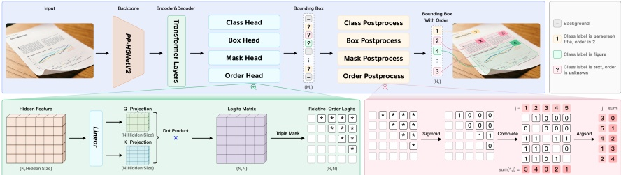
Hình 3 | Kiến trúc thống nhất của PP-DocLayoutV3, bao gồm các bộ phận xử lý song song cho phân loại đối tượng và dự đoán thứ tự đọc mối quan hệ.
Điểm sáng kiến kiến trúc cốt lõi của PP-DocLayoutV3 là tích hợp trực tiếp dự đoán thứ tự đọc vào bộ giải mã Transformer. Cụ thể, mô hình của chúng tôi mở rộng khung RT-DETR để đồng thời tối ưu hóa vị trí hình học và thứ tự logic. Dựa trên phương pháp dựa trên truy vấn, bộ giải mã lặp đi lặp lại tinh chỉnh N truy vấn đối tượng $ Q = \{q_i\}_{i=1}^N \in \mathbb{R}^{N \times d} $. Sau đó, thứ tự đọc được suy ra từ các biểu diễn truy vấn đã được tinh chỉnh của lớp giải mã cuối cùng thông qua Cơ chế Con trỏ Toàn cầu.
Trang 6
Chúng tôi đưa các truy vấn đã được tinh chỉnh vào một không gian quan hệ chung để tính toán điểm ưu tiên giữa các cặp $ S_{i,j} $:
$$$$ S_{i,j}=\frac{f(q_{i},q_{j})-f(q_{j},q_{i})}{\sqrt{d_{h}}},\quad\mathrm{w h e r e}f(q_{i},q_{j})=(W_{q}q_{i})^{\top}(W_{k}q_{j}) $$$$
(1)
trong đó $ W_q, W_k \in \mathbb{R}^{d \times d_h} $ là các ma trận chiếu có thể học được và $ d_h $ biểu thị chiều ẩn. Ma trận quan hệ kết quả $ S \in \mathbb{R}^{N \times N} $ được giới hạn để là ma trận phản đối xứng, tức là $ S_{i,j} = -S_{j,i} $, trong đó $ S_{i,j} > 0 $ có nghĩa là phần tử $ i $ đứng trước phần tử $ j $.
Trong quá trình suy luận, để tạo ra một chuỗi nhất quán trên toàn bộ từ các mối quan hệ đôi, chúng tôi sử dụng chiến lược xếp hạng dựa trên bỏ phiếu. Đầu tiên, chúng tôi áp dụng hàm sigmoid $ \sigma(\cdot) $ cho ma trận mối quan hệ S và ẩn các phần tử trên đường chéo. Số phiếu bầu ưu tiên tuyệt đối $ V_j $ cho mỗi phần tử j được tính bằng cách tổng hợp xác suất của các phần tử khác đứng trước nó:
$$$$ V_{j}=\sum_{i=1,i\neq j}^{N}\sigma(S_{i,j}). $$$$
(2)
Thứ tự đọc cuối cùng được xác định bằng cách sắp xếp các phần tử theo thứ tự tăng dần của tổng số phiếu bầu $V_{j}$. Phương pháp tối ưu hóa này đảm bảo rằng trình tự logic rất nhạy cảm với các đặc điểm của đối tượng, dẫn đến hiệu suất vượt trội trên các bố cục tài liệu phức tạp, nhiều cột và không tiêu chuẩn.
Bằng cách tích hợp các bước phát hiện, phân đoạn và sắp xếp vào một mô hình tập trung vào thị giác, PP-DocLayoutV3 loại bỏ nhu cầu xử lý hậu kỳ dư thừa và tách biệt quá trình trích xuất đặc trưng. Mô hình này tạo ra cấu trúc tài liệu hoàn chỉnh chỉ trong một lần xử lý, đồng thời cung cấp nhãn phân loại, tọa độ hộp giới hạn, phân đoạn chính xác theo pixel và trình tự đọc hợp lý.
2.1.2. PaddleOCR-VL-1.5-0.9B: Element-level Recognition and Text Spotting
PaddleOCR-VL-1.5-0.9B kế thừa kiến trúc nhẹ của PaddleOCR-VL-0.9B [9], tích hợp bộ mã hóa hình ảnh độ phân giải gốc [17], bộ kết nối MLP thích ứng, và mô hình ngôn ngữ ERNIE-4.5-0.3B nhẹ [5]. Trong bản cập nhật này, khả năng của mô hình đã được mở rộng để bao gồm nhận dạng dấu hiệu và nhận dạng văn bản. Do đó, mô hình hiện hỗ trợ một bộ sáu nhiệm vụ cốt lõi: nhận dạng văn bản, nhận dạng công thức, nhận dạng bảng, nhận dạng biểu đồ, nhận dạng dấu hiệu, và nhận dạng văn bản.
So sánh với phiên bản trước, PaddleOCR-VL-1.5-0.9B thể hiện những cải tiến đáng kể về độ chính xác trong việc nhận dạng bảng biểu phức tạp và các công thức toán học. Ngoài ra, mô hình này còn tích hợp các tối ưu hóa chi tiết hơn cho các ký tự hiếm, văn bản Trung Quốc cổ, bảng biểu đa ngôn ngữ và các yếu tố trang trí văn bản như gạch dưới và dấu nhấn.
2.2. Training Recipe
Các phần sau sẽ giới thiệu chi tiết về đào tạo cho hai mô-đun này: PP-DocLayoutV3 cho phân tích bố cục và PaddleOCR-VL-1.5-0.9B cho nhận dạng thành phần và phát hiện chữ.
Trang 7
2.2.1. Layout Analysis
Việc huấn luyện PP-DocLayoutV3 phát triển từ quy trình hai giai đoạn tách biệt được sử dụng trong PP-DocLayoutV2 [9], và chuyển sang một chiến lược tối ưu hóa toàn diện, phức tạp hơn. Phương pháp này cho phép các mô-đun phát hiện, phân đoạn đối tượng và thứ tự đọc chia sẻ một biểu diễn đặc trưng thống nhất, từ đó cải thiện sự phù hợp giữa vị trí không gian và trình tự logic.
Mô hình được khởi tạo với các trọng số đã được huấn luyện trước từ PP-DocLayout_plus-L [13]. Chúng tôi đã mở rộng bộ dữ liệu huấn luyện của mình lên hơn 38.000 mẫu tài liệu chất lượng cao. Mỗi mẫu đều trải qua quá trình đánh giá thủ công nghiêm ngặt để cung cấp thông tin chính xác, bao gồm tọa độ, nhãn phân loại và thứ tự đọc tuyệt đối cho từng thành phần bố cục.
Để đạt được tính bền vững về môi trường, chúng tôi đã thiết kế một quy trình tăng cường dữ liệu đặc biệt, tập trung vào việc mô phỏng các biến dạng phức tạp thường gặp trong ảnh chụp bằng điện thoại thông minh. Quy trình này khác với các phương pháp tăng cường thông thường, vì nó đặc biệt mô phỏng các biến dạng vật lý phức tạp trong thực tế.
Chúng tôi sử dụng trình tối ưu AdamW với hệ số suy giảm trọng số là 0.0001. Tốc độ học được đặt ở mức không đổi là $2 \times 10^{-4}$ để đảm bảo sự hội tụ ổn định của các phần đầu Global Pointer và Mask. Mô hình được huấn luyện trong 150 epochs với kích thước lô tổng là 32.
Ngược lại với phiên bản trước, tất cả các thành phần – bao gồm cả kiến trúc RT-DETR và bộ chuyển đổi thứ tự đọc tích hợp – đều được huấn luyện đồng thời. Phương pháp này đảm bảo rằng các truy vấn được học trong bộ giải mã Transformer có thể nắm bắt cả ranh giới hình học và mối quan hệ hình học của các thành phần trong tài liệu.
2.2.2. Element-level Recognition and Text Spotting
Dựa trên kiến trúc được mô tả trong phần 2.1.2, PaddleOCR-VL-1.5-0.9B giới thiệu một phương pháp huấn luyện tiến tiến sử dụng PaddleFormers [18], đây là bộ công cụ huấn luyện hiệu suất cao dành cho các mô hình ngôn ngữ lớn (LLMs) và các mô hình thị giác (VLMs) được xây dựng trên khung PaddlePaddle [19]. Mặc dù chúng tôi vẫn giữ lại chiến lược điều chỉnh và cài đặt khởi tạo hiệu quả từ phiên bản trước, phương pháp huấn luyện đã được nâng cấp đáng kể để tăng cường quy mô dữ liệu, sự đa dạng của nhiệm vụ và độ mạnh mẽ của mô hình. Tổng quan về ba giai đoạn được trình bày trong Bảng 1.
| Settings | Pre-training | Post-training |
| Training Samples | 46M | 5.6M |
| Max Resolution | 1280 $ \times $ 28 $ \times $ 28 | 1280 $ \times $ 28 $ \times $ 28 |
| Sequence length | 16384 | 16384 |
| Trainable components | All | All |
| Batch sizes | 128 | 128 |
| Data Augmentation | Yes | Yes |
| Maximum LR | 5 $ \times $ 10 $ ^{-5} $ | 8 $ \times $ 10 $ ^{-6} $ |
| Epoch | 1 | 1 |
Bảng 1 | Cài đặt huấn luyện cho PaddleOCR-VL-1.5-0.9B.
Giai đoạn tiền huấn luyện: Cải thiện sự phù hợp giữa hình ảnh và ngôn ngữ. Mặc dù mục tiêu cơ bản vẫn là liên kết các đặc điểm hình ảnh với ngữ nghĩa của văn bản, giai đoạn này trải qua một sự nâng cấp đáng kể về dữ liệu so với PaddleOCR-VL-0.9B [9], mở rộng bộ dữ liệu tiền huấn luyện từ 29 triệu cặp hình ảnh-văn bản lên 46 triệu. Sự mở rộng này thể hiện một bước tiến vượt bậc về phân phối dữ liệu, chứ không chỉ là sự tăng lên về số lượng. Cụ thể, để cải thiện khả năng tổng quát của phần cốt lõi hình ảnh và hỗ trợ các khả năng mới, chúng tôi tích hợp một loạt các tài liệu đa ngôn ngữ và các tình huống thực tế phức tạp. Hơn nữa, chúng tôi chủ động đưa vào
Trang 8
Dữ liệu huấn luyện quy mô lớn liên quan đến nhận dạng con hải cẩu và phát hiện chữ trong giai đoạn điều chỉnh này. Cụ thể, độ phân giải tối đa cho nhiệm vụ phát hiện được tăng lên thành 2048 x 28 x 28 pixel, cho phép mô hình đạt được khả năng định vị và nhận dạng chữ chính xác hơn. Bằng cách giới thiệu các thông tin trước (priors) cụ thể cho từng nhiệm vụ ngay từ đầu trong quy trình huấn luyện, mô hình tạo ra một nền tảng vững chắc, có khả năng nắm bắt các mẫu hình thị giác phức tạp và hỗ trợ hiệu quả các nhiệm vụ định vị và nhận dạng chi tiết trong các giai đoạn tiếp theo.
Sau khi đào tạo: Tinh chỉnh hướng dẫn với các khả năng mới. Trong giai đoạn này, chúng tôi kế thừa bốn nhiệm vụ hướng dẫn cơ bản từ PaddleOCR-VL-0.9B—Nhận dạng văn bản, bảng biểu, công thức và biểu đồ—đảm bảo khả năng tương thích ngược và hiệu suất cao trên các yếu tố tiêu chuẩn trong tài liệu. Điểm sáng của PaddleOCR-VL-1.5-0.9B nằm ở việc bổ sung thêm hai nhiệm vụ chuyên biệt:
1. Nhận dạng dấu: Chúng tôi giới thiệu hướng dẫn cụ thể về cách xử lý các dấu và tem chính thức, giải quyết các vấn đề như văn bản cong, hình ảnh mờ và nhiễu nền.
2. Nhận diện văn bản (OCR dựa trên ngữ cảnh): Khác với OCR thông thường, chỉ đơn thuần xuất ra nội dung văn bản, nhiệm vụ nhận diện văn bản yêu cầu mô hình dự đoán văn bản và vị trí chính xác của nó theo thứ tự đọc tự nhiên. Để đáp ứng với bố cục phức tạp thường gặp trong thực tế (ví dụ: văn bản xoay, cảnh thường hoặc biểu mẫu dày đặc), chúng tôi sử dụng biểu diễn hình tứ giác 4 điểm thay vì hộp giới hạn truyền thống 2 điểm. Biểu diễn 4 điểm định nghĩa một vùng văn bản bằng bốn đỉnh: Góc trên bên trái (TL), Góc trên bên phải (TR), Góc dưới bên phải (BR) và Góc dưới bên trái (BL). Phương pháp này mang lại sự linh hoạt vượt trội trong việc xác định các hình dạng văn bản nghiêng và không đều, mà một hình chữ nhật theo trục thông thường không thể bao bọc chặt chẽ.
Về mặt kỹ thuật, đối với một đoạn văn cụ thể, chuỗi mục tiêu được xây dựng bằng cách thêm tám từ chỉ vị trí vào các từ của đoạn văn.
$$$$ Y=Text\oplus\cdots $$$$
(3)
Ở đây, chúng tôi giới thiệu một tập hợp các token { $ $,..., $ $} vào từ vựng của mô hình để biểu diễn tọa độ đã được chuẩn hóa. Thay vì coi tọa độ như một chuỗi số đơn thuần, các token đặc biệt này cho phép mô hình học các biểu diễn cụ thể cho thông tin không gian và ngăn chặn việc phân tách token.
Ví dụ, một ví dụ được công nhận của từ "DREAM" được biểu diễn như sau:
$$$$ \begin{array}{l} DREAM\\\end{array} $$$$
Cách biểu diễn thống nhất này cho phép mô hình thực hiện nhận dạng và định vị chi tiết trong một lần xử lý duy nhất.
Để tăng cường khả năng tổng quát và thống nhất các kiểu nhãn khác nhau, chúng tôi giới thiệu một giai đoạn Học tăng cường sử dụng Tối ưu hóa Chính sách Tương đối Nhóm (Group Relative Policy Optimization - GRPO) [20]. Bằng cách thực hiện các lần thử song song và tính toán lợi thế tương đối trong mỗi nhóm, GRPO giúp cập nhật chính sách một cách mạnh mẽ và giảm thiểu sự không nhất quán về kiểu. Quá trình này được hỗ trợ bởi một giao thức sàng lọc dữ liệu động, ưu tiên các mẫu khó với tiềm năng phần thưởng và sự không chắc chắn về entropy cao, đảm bảo mô hình tập trung vào các trường hợp học tập phức tạp và có giá trị.
Trang 9
3. Dataset
3.1. Layout Analysis
Để đảm bảo hiệu suất hoạt động mạnh mẽ của mô hình trên nhiều tình huống thực tế với các loại tài liệu khác nhau, chúng tôi đã xây dựng một bộ dữ liệu nội bộ cho phân tích bố cục. Các nguồn dữ liệu bao gồm 38.000 hình ảnh tài liệu thuộc nhiều lĩnh vực khác nhau, bao gồm các bài báo học thuật, sách giáo khoa, phân tích thị trường, báo cáo tài chính, slide, báo, tài liệu giảng dạy bổ sung, đề kiểm tra, và nhiều hóa đơn và biên lai khác. Bộ dữ liệu này bao gồm các chú thích thủ công tỉ mỉ trên 25 danh mục thành phần khác nhau: Tiêu đề đoạn văn, hình ảnh, văn bản, số, tóm tắt, nội dung, tiêu đề hình, công thức hiển thị, bảng, tài liệu tham khảo, tiêu đề tài liệu, ghi chú, tiêu đề, thuật toán, ghi chú cuối, dấu, biểu đồ, số công thức, nội dung phụ, hình ảnh tiêu đề, hình ảnh ghi chú, công thức trực tiếp, văn bản dọc, và ghi chú thị giác. Tất cả các tài liệu đều được chú thích thủ công với ranh giới chi tiết và thứ tự đọc tương ứng, giúp cho việc huấn luyện và đánh giá hiệu quả cho cả việc phát hiện các thành phần bố cục và khôi phục thứ tự đọc. Bộ dữ liệu chất lượng cao này đảm bảo rằng mô hình có thể tái tạo chính xác cả cấu trúc không gian và luồng logic của các tài liệu phức tạp.
Quy trình quản lý dữ liệu bao gồm các chiến lược khai thác dữ liệu cụ thể, nhằm mở rộng sự đa dạng của bộ dữ liệu và xác định các trường hợp đặc biệt để cải thiện độ mạnh mẽ của mô hình. Quy trình này bắt đầu bằng việc lấy mẫu dựa trên phân cụm, áp dụng cho một bộ dữ liệu nội bộ rộng lớn, sử dụng các đặc điểm hình ảnh để đảm bảo sự phân bố đại diện và giảm thiểu sự trùng lặp. Sau đó, quy trình khai thác các trường hợp đặc biệt được thực hiện bằng PP-DocLayoutV2 [9] để suy luận với hai ngưỡng. Các mẫu có sự khác biệt đáng kể về mật độ phát hiện giữa hai ngưỡng độ tin cậy cao và thấp được phân loại là các trường hợp không ổn định. Phương pháp này giúp khám phá một cách có hệ thống các cấu trúc bố cục không thông thường—bao gồm truyện tranh, bản vẽ CAD và ảnh chụp màn hình có tỷ lệ khung hình cao—những cấu trúc này khác biệt so với các định dạng tài liệu tiêu chuẩn. Các trường hợp này được tinh chỉnh thêm thông qua quy trình có sự tham gia của con người. Việc tích hợp các kịch bản đa dạng này vào bộ dữ liệu mở rộng khả năng biểu diễn các đặc điểm của mô hình và nâng cao khả năng thích ứng của nó trong các lĩnh vực tài liệu phức tạp trong thực tế.
3.2. PaddleOCR-VL-1.5-0.9B
Chiến lược xây dựng dữ liệu cho PaddleOCR-VL-1.5-0.9B dựa trên hai mục tiêu chính: tăng cường khả năng của mô hình trên các mẫu dữ liệu khó và mở rộng phạm vi các khả năng được hỗ trợ. Do đó, quy trình chuẩn bị dữ liệu của chúng tôi được chia thành hai phần riêng biệt: (1) Tìm kiếm các mẫu dữ liệu khó (Phần 3.2.1), tập trung vào việc xác định và đánh trọng các mẫu có độ không chắc chắn cao để tinh chỉnh các ranh giới quyết định của mô hình; và (2) Xây dựng dữ liệu cho các khả năng mới (Phần 3.2.2), bao gồm việc xây dựng các bộ dữ liệu chuyên biệt để khai thác các kỹ năng mới như nhận dạng văn bản, nhận dạng dấu, và hỗ trợ đa ngôn ngữ nâng cao.
3.2.1. Data Selection Strategy: Uncertainty-Aware Cluster Sampling
Để tối đa hóa hiệu quả của giai đoạn tinh chỉnh hướng dẫn (Giai đoạn 2), chúng tôi đề xuất một chiến lược quản lý dữ liệu được thiết kế để cân bằng giữa sự đa dạng về hình ảnh và độ khó của mẫu. Thay vì lấy mẫu ngẫu nhiên đồng đều, chúng tôi sử dụng cơ chế "Lấy mẫu theo mức độ không chắc chắn" (UACS). Phương pháp này đảm bảo rằng dữ liệu huấn luyện bao gồm nhiều kịch bản hình ảnh khác nhau, đồng thời phân bổ thêm ngân sách huấn luyện cho các trường hợp "khó", nơi mà mô hình thể hiện mức độ không chắc chắn cao.
1. Phân nhóm các đặc điểm hình ảnh. Đầu tiên, để đảm bảo sự đa dạng trong bố cục hình ảnh trên sáu nhiệm vụ (OCR, bảng biểu, công thức, biểu đồ, dấu hiệu và nhận dạng), chúng tôi sử dụng bộ mã hóa hình ảnh CLIP [21] để
Trang 10
trích xuất các biểu diễn ngữ nghĩa đa chiều cho tất cả các hình ảnh tiềm năng. Đối với mỗi nhiệm vụ, chúng tôi áp dụng thuật toán K-Means để phân chia tập dữ liệu D thành K cụm hình ảnh riêng biệt $\{C_1, C_2, \ldots, C_K\}$. Bước này nhóm các mẫu có cấu trúc hình ảnh tương tự (ví dụ: bảng có đường kẻ liên tục so với bảng không dây) lại với nhau.
2. Ước tính mức độ không chắc chắn. Đối với mỗi cụm $ C_i $, chúng tôi ước tính độ khó của nó bằng cách đo mức độ không chắc chắn trong dự đoán của mô hình. Cụ thể, chúng tôi lấy một tập hợp ngẫu nhiên các hình ảnh từ $ C_i $ và thực hiện nhiều lần suy luận bằng cách sử dụng mô hình đã được huấn luyện trước từ giai đoạn 1 với giải mã ngẫu nhiên. Chúng tôi tính toán một điểm số không chắc chắn $ S_i $ dựa trên sự khác biệt giữa các kết quả được tạo ra. Điểm số $ S_i $ cao hơn cho thấy rằng mô hình không nhất quán hoặc thiếu tự tin đối với các mẫu trong cụm này.
3. Kế hoạch lấy mẫu có trọng số. Dựa trên điểm số không chắc chắn, chúng tôi xây dựng một kế hoạch lấy mẫu để xác định số lượng mẫu $ N_i $ cần lấy từ mỗi cụm $ C_i $. Dựa trên nguyên tắc khai thác các ví dụ khó, chúng tôi áp dụng một phương pháp trọng số đa thức để tăng cường sự tập trung vào các cụm khó hơn. Cụ thể, số lượng mẫu được phân bổ cho cụm $ C_i $ được xác định bởi:
$$$$ N_{i}=\min\left(\left\lfloor\frac{(S_{i}+\alpha)^{\beta}}{\sum_{j=1}^{K}(S_{j}+\alpha)^{\beta}}\times N_{total}\right\rfloor,\left|C_{i}\right|\right) $$$$
(4)
trong đó $S_i$ là điểm số độ không chắc chắn trung bình của cụm $C_i$, và $|C_i|$ biểu thị tổng số mẫu có sẵn trong cụm đó. Các tham số $\alpha$ và $\beta$ lần lượt là các hệ số làm mịn và cường độ (được đặt là $\alpha = 1.0$, $\beta = 2.0$ dựa trên quan sát thực nghiệm). $N_{\text{total}}$ biểu thị tổng ngân sách lấy mẫu. Chiến lược này cho phép chúng tôi động lực tăng cường mẫu cho các tình huống phức tạp (ví dụ: hình dạng bị méo, bảng xếp chồng), đồng thời duy trì một cơ sở tham chiếu đại diện cho các trường hợp đơn giản.
Như đã được trình bày trong phần trước, chúng tôi sử dụng chiến lược "Lấy mẫu phân nhóm có ý thức về sự không chắc chắn" (Uncertainty-Aware Cluster Sampling - UACS) để chọn các mẫu huấn luyện hiệu quả nhất dựa trên phân nhóm hình ảnh và sự biến động của suy luận.
3.2.2. Data Construction for New Capabilities
Ngoài việc kiểm soát chất lượng dữ liệu, chúng tôi đã mở rộng khả năng của VLM bằng cách tích hợp dữ liệu từ nhiều nhiệm vụ, ngôn ngữ và loại tài liệu khác nhau. Sự mở rộng này tập trung vào các khía cạnh chính sau: Nhận dạng, Văn bản chuyên biệt (dấu), Cải thiện nhận dạng văn bản bằng công nghệ OCR, và Bảng tính, công thức và biểu đồ phức tạp.
Thu thập dữ liệu: Chúng tôi đã thu thập một bộ dữ liệu lớn và đa dạng, bao gồm nhiều loại hình ảnh khác nhau, bao gồm báo cáo nghiên cứu tài chính, tài liệu dạng bảng, tài liệu viết tay, văn bản cổ điển và các hình ảnh tài liệu và cảnh tự nhiên phức tạp khác. Trong quá trình đánh dấu, chúng tôi đã sử dụng PP-OCRv5 [22] để tạo ra kết quả nhận dạng ban đầu, sau đó áp dụng chiến lược lọc chéo dựa trên IoU để loại bỏ các mẫu chất lượng kém và không nhất quán. Đối với một số mẫu có nhãn mơ hồ hoặc không chính xác, chúng tôi đã sử dụng thêm các mô hình đa phương thức, bao gồm PaddleOCR-VL [9] và Qwen3-VL [6], để tinh chỉnh nhãn, từ đó cải thiện đáng kể chất lượng và độ tin cậy tổng thể của bộ dữ liệu.
Dấu: Chúng tôi đã kết hợp hình ảnh tổng hợp và hình ảnh thực tế của hợp đồng, hóa đơn và dấu kỷ niệm để xây dựng một bộ dữ liệu chất lượng cao. Nhãn được tạo ra bằng Qwen3-VL [6] và được tinh chỉnh thông qua quy trình gắn nhãn lại dựa trên tinh chỉnh. Các trường hợp khó khăn đã được sửa thủ công để đảm bảo độ chính xác và độ tin cậy của việc gắn nhãn cuối cùng.
OCR: Chúng tôi đã cải thiện đáng kể khả năng của mô hình bằng cách tinh chỉnh bộ dữ liệu.
Trang 11
tính chính xác và mở rộng phạm vi chức năng. Điều này bao gồm việc sửa đổi một cách có hệ thống các biểu diễn công thức và logic phân dòng, đồng thời mở rộng hỗ trợ cho các ký hiệu đặc biệt dành cho giáo dục, chẳng hạn như dấu nhấn và gạch dưới, để nắm bắt ý nghĩa hướng dẫn. Hơn nữa, việc tích hợp chữ Bengali và chữ tiếng Trung (Tibet) mở rộng tính linh hoạt ngôn ngữ của mô hình, đảm bảo hiệu suất mạnh mẽ trên nhiều hệ thống viết và bối cảnh giáo dục khác nhau.
Công thức: Bộ dữ liệu "Formula" bao gồm các mẫu mô phỏng từ CV, chẳng hạn như ánh sáng Gaussian và hiện tượng moiré hài, để tái tạo các điều kiện vật lý như quét, biến dạng, chụp ảnh màn hình và biến dạng hình học. Các mẫu này bao gồm một loạt các biến số môi trường, bao gồm cả sự thay đổi ánh sáng và các biến dạng phức tạp của tài liệu thường gặp trong các tình huống thực tế.
Bảng: Chức năng bảng đã được mở rộng để bao gồm nhiều tình huống khác nhau, bao gồm báo cáo tài chính, các bài nghiên cứu học thuật và các biểu mẫu công nghiệp phức tạp. Tích hợp các cấu trúc đa dạng, chẳng hạn như bảng đăng ký và bảng danh mục. Điểm nhấn chính là khả năng nhận dạng chính xác các công thức ở cấp tế bào và nội dung đa ngôn ngữ trong các môi trường bảng phức tạp. Những cải tiến này đảm bảo chuyển đổi chính xác sang các định dạng có cấu trúc, ngay cả khi xử lý các cấu trúc tế bào phức tạp và các ghi chú chuyên nghiệp.
4. Evaluation
Để đánh giá đầy đủ hiệu quả của PaddleOCR-VL-1.5, chúng tôi đã tiến hành đánh giá trên bộ kiểm thử phân tích tài liệu OmniDocBench v1.5 và bộ dữ liệu thực tế được tạo ra từ đó, Real5OmniDocBench. Hơn nữa, chúng tôi đã mở rộng phạm vi đánh giá bằng cách thêm các nhiệm vụ phát hiện văn bản và nhận dạng dấu, nhằm cung cấp một phân tích toàn diện hơn về hiệu suất của mô hình trong các tình huống thực tế và phức tạp.
4.1. Document Parsing
Phần này trình bày đánh giá khả năng phân tích tài liệu toàn diện, sử dụng hai bộ tiêu chí sau, nhằm đo lường hiệu suất tổng thể trong các tình huống thực tế liên quan đến tài liệu.
OmniDocBench v1.5 Để đánh giá toàn diện khả năng phân tích tài liệu, chúng tôi đã tiến hành các thử nghiệm rộng rãi trên bộ kiểm thử OmniDocBench v1.5 [2]. Đây là một phiên bản mở rộng của phiên bản v1.0, bổ sung thêm 374 tài liệu mới, tổng cộng là 1.355 trang tài liệu. Bộ kiểm thử này có sự phân bố dữ liệu cân bằng hơn cả tiếng Trung và tiếng Anh, cũng như bao gồm nhiều công thức và các yếu tố khác. So với phiên bản v1.0, phương pháp đánh giá đã được cập nhật. Mặc dù vẫn sử dụng khoảng cách chỉnh sửa để đánh giá văn bản và thứ tự đọc, và sử dụng độ tương đồng dựa trên khoảng cách Tree-Edit-Distance (TEDS) để đánh giá bảng, các công thức hiện được đánh giá bằng phương pháp So khớp Detections Chữ (CDM) [23]. Chỉ số này cung cấp một đánh giá khách quan và mạnh mẽ hơn về tính chính xác của các công thức dự đoán. Chỉ số tổng thể là sự kết hợp có trọng số của các chỉ số cho văn bản, công thức và bảng.
Bảng 2 cho thấy PaddleOCR-VL-1.5 đạt được hiệu suất hàng đầu (SOTA), liên tục vượt trội so với các công cụ xử lý hình ảnh hiện có, các mô hình VLM chung và các mô hình phân tích tài liệu chuyên dụng trên tất cả các chỉ số quan trọng. Đặc biệt, PaddleOCR-VL-1.5 thể hiện sự cải thiện đáng kể so với phiên bản trước, PaddleOCR-VL, nâng tổng điểm từ 92,86% lên mức hàng đầu là 94,50%. Cụ thể, nó đạt được sự tăng lên là 2,99%, 1,87% và 0,1% trong các chỉ số CDM Score, Table-TEDS và Thứ tự đọc, tương ứng. Hơn nữa, mô hình của chúng tôi đạt được kết quả hàng đầu mới trong tất cả các nhiệm vụ con, bao gồm khoảng cách Text-Edit giảm 0,035 và cải thiện chỉ số Formula-CDM.
Trang 12
| Model Type | Methods | Parameters | Overall $ \uparrow $ | TextEdit $ \downarrow $ | FormulaCDM $ \uparrow $ | TableTEDS $ \uparrow $ | TableTEDS-3 $ \uparrow $ | Reading OrderEdit $ \downarrow $ |
| Pipeline Tools | Marker-1.8.2 [24] | - | 71.30 | 0.206 | 76.66 | 57.88 | 71.17 | 0.250 |
| Mineru2-pipeline [25] | - | 75.51 | 0.209 | 76.55 | 70.90 | 79.11 | 0.225 |
| PP-StructureV3 [22] | - | 86.73 | 0.073 | 85.79 | 81.68 | 89.48 | 0.073 |
| General VLMs | GPT-4o [7] | - | 75.02 | 0.217 | 79.70 | 67.07 | 76.09 | 0.148 |
| InternVL3-76B [26] | 76B | 80.33 | 0.131 | 83.42 | 70.64 | 77.74 | 0.113 |
| InternVL3.5-241B [27] | 241B | 82.67 | 0.142 | 87.23 | 75.00 | 81.28 | 0.125 |
| GPT-5.2 [28] | - | 85.50 | 0.123 | 86.11 | 82.66 | 87.35 | 0.099 |
| Qwen2.5-VL-72B [29] | 72B | 87.02 | 0.094 | 88.27 | 82.15 | 86.22 | 0.102 |
| Gemini-2.5 Pro [30] | - | 88.03 | 0.075 | 85.82 | 85.71 | 90.29 | 0.097 |
| Qwen3-VL-235B-A22B-Instruct [6] | 235B | 89.15 | 0.069 | 88.14 | 86.21 | 90.55 | 0.068 |
| Gemini-3 Pro [15] | - | 90.33 | 0.065 | 89.18 | 88.28 | 90.29 | 0.071 |
| Specialized VLMs | Dolphin [3] | 0.3B | 74.67 | 0.125 | 67.85 | 68.70 | 77.77 | 0.124 |
| OCRFlux-3B [31] | 3B | 74.82 | 0.193 | 68.03 | 75.75 | 80.23 | 0.202 |
| Mistral OCR [32] | - | 78.83 | 0.164 | 82.84 | 70.03 | 78.04 | 0.144 |
| POINTS-Reader [4] | 3B | 80.98 | 0.134 | 79.20 | 77.13 | 81.66 | 0.145 |
| olmOCR-7B [33] | 7B | 81.79 | 0.096 | 86.04 | 68.92 | 74.77 | 0.121 |
| Dolphin-1.5 [3] | 0.3B | 83.21 | 0.092 | 80.78 | 78.06 | 84.10 | 0.080 |
| MinerU2-VLM [25] | 0.9B | 85.56 | 0.078 | 80.95 | 83.54 | 87.66 | 0.086 |
| Nanonets-OCR-s [34] | 3B | 85.59 | 0.093 | 85.90 | 80.14 | 85.57 | 0.108 |
| MonkeyOCR-pro-1.2B [1] | 1.9B | 86.96 | 0.084 | 85.02 | 84.24 | 89.02 | 0.130 |
| Deepseek-OCR [10] | 3B | 87.01 | 0.073 | 83.37 | 84.97 | 88.80 | 0.086 |
| MonkeyOCR-3B [1] | 3.7B | 87.13 | 0.075 | 87.45 | 81.39 | 85.92 | 0.129 |
| dots.ocr [35] | 3B | 88.41 | 0.048 | 83.22 | 86.78 | 90.62 | 0.053 |
| MonkeyOCR-pro-3B [1] | 3.7B | 88.85 | 0.075 | 87.25 | 86.78 | 90.63 | 0.128 |
| MinerU2.5 [2] | 1.2B | 90.67 | 0.047 | 88.46 | 88.22 | 92.38 | 0.044 |
| PaddleOCR-VL [9] | 0.9B | 92.86 | 0.035 | 91.22 | 90.89 | 94.76 | 0.043 |
| PaddleOCR-VL-1.5 | 0.9B | 94.50 | 0.035 | 94.21 | 92.76 | 95.79 | 0.042 |
Bảng 2 | Đánh giá toàn diện về OmniDocBench v1.5. Các chỉ số hiệu suất được trích từ bảng xếp hạng chính thức [14], ngoại trừ Gemini-3 Pro, GPT-5.2.
Qwen3-VL-235B-A22B-Instruct và mô hình của chúng tôi, được đánh giá độc lập.
Điểm đạt được là 94,21%, và đạt điểm cao nhất lần lượt là 92,76% và 95,79% trong bảng Table-TEDS và bảng Table-TEDS-S, tương ứng. Những cải tiến này, đặc biệt là trong việc duy trì điểm đánh giá thứ tự đọc cao là 0,042, cho thấy khả năng nhận dạng văn bản, trích xuất công thức và phân tích cấu trúc bảng phức tạp của mô hình đã được nâng cao đáng kể.
Real5-OmniDocBench: Real5-OmniDocBench là một bộ tiêu chuẩn mới, tập trung vào các tình huống thực tế, được chúng tôi xây dựng dựa trên bộ dữ liệu OmniDocBench v1.5. Bộ dữ liệu này bao gồm năm tình huống khác nhau: quét, chỉnh sửa hình ảnh, chụp ảnh màn hình, chiếu sáng và độ lệch. Ngoài danh mục "Quét", tất cả các hình ảnh đều được thu thập thủ công thông qua thiết bị di động cầm tay để mô phỏng sát các điều kiện thực tế. Mỗi tập dữ liệu đều tương ứng trực tiếp với bộ dữ liệu gốc OmniDocBench, tuân thủ nghiêm ngặt các chú thích và quy trình đánh giá của nó. Nhờ tính chất thực nghiệm và tính chân thực, bộ dữ liệu này đóng vai trò là một bộ tiêu chuẩn nghiêm ngặt để đánh giá khả năng chống chịu của các mô hình phân tích tài liệu trong các ứng dụng thực tế. Hình 4 minh họa hình ảnh đại diện từ bộ dữ liệu được đề xuất.
Như được minh họa trong Bảng 3, PaddleOCR-VL-1.5 thể hiện sự vượt trội nhất quán trong tất cả các tình huống đánh giá, thiết lập kỷ lục mới với độ chính xác tổng thể là 92,05%. Mặc dù có kích thước tham số chỉ 0,9B, mô hình này vượt trội hơn đáng kể so với các mô hình VLM (Vision-Language Model) lớn, chẳng hạn như Qwen3-VL-235B và Gemini-3 Pro, cho thấy hiệu quả sử dụng tham số đặc biệt cho các tác vụ tập trung vào tài liệu. Đặc biệt, trong danh mục "Skewing" đầy thách thức, PaddleOCR-VL-1.5 đạt được độ chính xác là 91,66%, thể hiện sự cải thiện tuyệt đối là 14,19% so với
Trang 13
người tiền nhiệm. Sự cải tiến đáng kể này cho thấy khả năng chống lại các biến dạng hình học cực đoan vượt trội và xác nhận tính tin cậy của nó trong việc xử lý tài liệu phức tạp trong môi trường không giới hạn. Các so sánh chi tiết giữa các thành phần khác nhau, bao gồm văn bản, công thức, bảng biểu và thứ tự đọc, có thể được tìm thấy trong Phụ lục B.
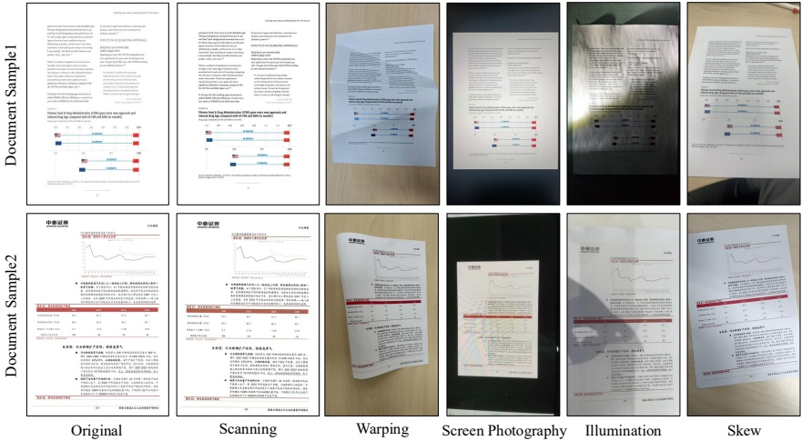
Hình 4 | Các mẫu từ Real5-OmniDocBench.
| Model Type | Methods | Parameters | Overall↑ | Scanning↑ | Warping↑ | Screen Photography↑ | Illumination↑ | Skew↑ |
| Pipeline Tools | Maker-1.8.2 [24] | - | 60.10 | 70.27 | 58.98 | 63.65 | 66.31 | 41.27 |
| PP-StructureV3 [22] | - | 64.45 | 84.68 | 59.34 | 66.89 | 73.38 | 37.98 |
| General VLMs | GPT-5.2 [28] | - | 78.66 | 84.43 | 76.26 | 76.75 | 80.88 | 75.00 |
| Qwen2.5-VL-72B [29] | 72B | 86.92 | 86.19 | 87.77 | 86.48 | 87.25 | 86.90 |
| Gemini-2.5 Pro [30] | - | 88.21 | 89.25 | 87.63 | 87.11 | 87.97 | 89.07 |
| Qwen3-VL-235B-A22B-Instruct [6] | 235B | 88.904 | 89.43 | 89.99 | 89.27 | 89.27 | 86.56 |
| Gemini-3 Pro [15] | - | 89.24 | 89.47 | 88.90 | 88.86 | 89.53 | 89.45 |
| Specialized VLMs | Dolphin-1.5 [3] | 0.3B | 61.48 | 83.39 | 50.50 | 69.76 | 75.61 | 28.16 |
| Dolphin [3] | 0.3B | 61.78 | 72.16 | 60.35 | 64.29 | 67.29 | 44.83 |
| Deepseek-OCR [10] | 3B | 73.99 | 86.17 | 67.20 | 75.31 | 78.10 | 63.01 |
| MinerU2-VLM [25] | 0.9B | 76.95 | 83.60 | 73.73 | 78.77 | 80.51 | 68.16 |
| MonkeyOCR-pro-1.2B [1] | 1.9B | 77.15 | 84.64 | 76.59 | 80.24 | 82.11 | 62.18 |
| MonkeyOCR-3B [1] | 3.7B | 78.29 | 84.65 | 77.27 | 80.71 | 83.16 | 65.67 |
| MonkeyOCR-pro-3B [1] | 3.7B | 79.49 | 86.94 | 78.90 | 82.44 | 84.71 | 64.47 |
| Nanonets-OCR-s [34] | 3B | 84.19 | 85.52 | 83.56 | 84.86 | 85.01 | 81.98 |
| PaddleOCR-VL [9] | 0.9B | 85.54 | 92.11 | 85.97 | 82.54 | 89.61 | 77.47 |
| MinerU2.5 [2] | 1.2B | 85.61 | 90.06 | 83.76 | 89.41 | 89.57 | 75.24 |
| dots.ocr [35] | 3B | 86.38 | 86.87 | 86.01 | 87.18 | 87.57 | 84.27 |
| PaddleOCR-VL-1.5 | 0.9B | 92.05 | 93.43 | 91.25 | 91.76 | 92.16 | 91.66 |
Bảng 3 | Đánh giá toàn diện về xử lý văn bản trên Real5-OmniDocBench. Phụ lục B cung cấp các chỉ số chi tiết hơn về bộ dữ liệu này.
Trang 14
4.2. New Capabilities
4.2.1. Text Spotting
Để đánh giá toàn diện khả năng nhận dạng văn bản của mô hình (phát hiện + nhận dạng), chúng tôi thiết lập một bộ tiêu chuẩn OCR toàn diện, bao gồm 10 khía cạnh chính. Ngoài các cài đặt tiêu chuẩn như các cảnh thường (Common) và nhận dạng đa ngôn ngữ (tiếng Nhật), bộ tiêu chuẩn này được thiết kế để phản ánh những thách thức thực tế trong việc triển khai, bằng cách chọn các trường hợp khó hơn, bao gồm hình ảnh bị mờ hoặc chất lượng kém (Blur), chữ viết biến đổi cao trong cả tiếng Trung và tiếng Anh (Handwrite_ch/en), nội dung bảng có cấu trúc và nhạy cảm với bố cục (Table), và các tài liệu lịch sử có ý nghĩa văn hóa như các văn bản cổ và tiếng Trung truyền thống (Ancient). Như đã tóm tắt trong Bảng 4, mô hình của chúng tôi đạt độ chính xác cao nhất trên tất cả 9 khía cạnh, liên tục vượt trội so với các mô hình tham chiếu mạnh mẽ và chứng minh khả năng tổng quát hóa tốt trong các điều kiện và phong cách văn bản khác nhau. Những kết quả này cho thấy rằng phương pháp được đề xuất vẫn đáng tin cậy không chỉ trong các tình huống tài liệu thông thường mà còn trong các tình huống thực tế đầy thách thức, đòi hỏi khả năng xác định chính xác và sao chép chính xác.
| Dataset | Overall | Ancient | Blur | Common | Handwrite $ \_{c} $ | Handwrite $ \_{e} $ | Printing $ \_{c} $ | Printing $ \_{e} $ | Table | Japanese |
| HunyuanOCR [12] | 0.6290 | 0.6164 | 0.6392 | 0.5222 | 0.7984 | 0.7665 | 0.6213 | 0.5956 | 0.4419 | 0.6593 |
| Rex-Omni [36] | 0.6682 | 0.4251 | 0.6936 | 0.6112 | 0.8147 | 0.7812 | 0.6961 | 0.6088 | 0.7185 | 0.6642 |
| PaddleOCR-VL-1.5 | 0.8621 | 0.8523 | 0.8422 | 0.7713 | 0.8952 | 0.9163 | 0.8669 | 0.8689 | 0.8993 | 0.8461 |
Bảng 4 | So sánh hiệu suất nhận dạng văn bản trên bộ dữ liệu thử nghiệm nội bộ. "Tổng thể" thể hiện độ chính xác trung bình trên tất cả 9 tiêu chí đánh giá.
4.2.2. Seal Recognition
Để đánh giá hiệu quả của mô hình trong các nhiệm vụ nhận dạng dấu hiệu phức tạp, chúng tôi đã xây dựng một bộ dữ liệu thử nghiệm chuyên biệt, bao gồm 300 hình ảnh chất lượng cao. Bộ dữ liệu này bao gồm nhiều hình dạng dấu hiệu khác nhau (ví dụ: hình tròn, hình bầu dục và hình chữ nhật) và các tình huống thực tế đầy thách thức, chẳng hạn như văn bản chồng chéo, in ấn có độ tương phản thấp và nền bị méo. Chúng tôi sử dụng khoảng cách chỉnh sửa chuẩn hóa (NED) làm chỉ số đánh giá chính để đánh giá độ chính xác nhận dạng ở mức ký tự.
Như được minh họa trong Bảng 5, PaddleOCR-VL-1.5 thể hiện ưu thế rõ rệt trong việc nhận dạng dấu. Mặc dù có kích thước nhỏ (0,9 tỷ tham số), nó đạt được độ chính xác NED là 0,138, vượt trội so với mô hình Qwen3-VL với 235 tỷ tham số (0,382). Điều này cho thấy hiệu quả của mô hình trong việc xử lý các yếu tố đặc biệt trong tài liệu.
| Model | Parameters | NED ( $ \downarrow $) |
| Qwen2.5-VL-72B [29] | 72B | 0.396 |
| Qwen3-VL-235B-A22B-Instruct [6] | 235B | 0.382 |
| PaddleOCR-VL-1.5 | 0.9B | 0.138 |
Bảng 5 | So sánh hiệu suất nhận dạng dấu trên bộ dữ liệu thử nghiệm nội bộ.
4.3. Inference Performance
Để tăng tốc độ xử lý, chúng tôi tối ưu hóa quy trình thực hiện của PaddleOCR-VL-1.5 bằng cách sử dụng thiết kế đa luồng và không đồng bộ, tương tự như chiến lược đã được sử dụng trong PaddleOCR-VL. Toàn bộ quy trình được chia thành ba giai đoạn liên tiếp: chuẩn bị đầu vào (chủ yếu là
Trang 15
(chuyển đổi các trang PDF thành hình ảnh), phân tích bố cục và suy luận VLM. Mỗi giai đoạn chạy trên một luồng riêng, và kết quả trung gian được trao đổi giữa các giai đoạn liền kề thông qua bộ đệm dựa trên hàng đợi. Kiến trúc này cho phép thực hiện đồng thời trên các giai đoạn, từ đó tăng cường khả năng song song và cải thiện hiệu suất tổng thể. Đặc biệt, trong giai đoạn suy luận VLM, các mini-batch được tạo ra một cách động: một batch được khởi chạy khi kích thước hàng đợi đạt đến một dung lượng đã định trước hoặc khi mục tiêu cũ nhất trong hàng đợi đã chờ lâu hơn một thời gian giới hạn. Chiến lược này cho phép nhóm các khối nội dung từ nhiều trang thành một lần suy luận duy nhất, từ đó tăng đáng kể hiệu quả song song, đặc biệt khi xử lý các bộ sưu tập tài liệu lớn. Ngoài ra, chúng tôi triển khai PaddleOCR-VL-1.5-0.9B trên các khung inference và phục vụ hiệu suất cao, chẳng hạn như FastDeploy [37], vLLM [38] và SGLang [39]. Các tham số thời gian chạy quan trọng, bao gồm max-num-batched-tokens và gpu-memory-utilization, được điều chỉnh cẩn thận để cân bằng giữa việc tối đa hóa hiệu suất suy luận và kiểm soát việc sử dụng bộ nhớ GPU.
Bảng 6 tóm tắt hiệu quả nhận dạng toàn diện của các phương pháp OCR khác nhau trên bộ dữ liệu OmniDocBench v1.5, khi sử dụng các nền tảng triển khai khác nhau. PaddleOCR-VL-1.5 đạt hiệu suất tốt nhất trên tất cả các tiêu chí. Với nền tảng FastDeploy, nó đạt được 1,4335 trang/giây và 2016,6 token/giây trên một GPU NVIDIA A100 duy nhất, vượt trội hơn so với phiên bản trước, PaddleOCR-VL, lần lượt là 16,9% và 18,6%. Kết quả này chứng minh rằng PaddleOCR-VL-1.5 cung cấp tốc độ và hiệu suất nhận dạng tiên tiến, phù hợp cho các ứng dụng hiểu tài liệu quy mô lớn trong thực tế.
| Methods | Backend | Total Time (s) $ \downarrow $ | Pages/s $ \uparrow $ | Tokens/s $ \uparrow $ |
| MonkeyOCR-pro-1.2B [1] | vLLM (v0.10.2) | 2152.7 | 0.6292 | 949.8 |
| dots.ocr [35] | vLLM (v0.14.0) | 3236.2 | 0.2791 | 374.3 |
| MinerU2.5 (mineru=2.5.2) [2] | vLLM (v0.10.2) | 1356.5 | 0.9984 | 1415.1 |
| DeepSeek-OCR [10] | vLLM (v0.8.5) | 2130.5 | 0.6358 | 897.4 |
| PaddleOCR-VL | vLLM (v0.10.2) | 1325.5 | 1.0216 | 1419.9 |
| PaddleOCR-VL | FastDeploy (v2.3) | 1104.5 | 1.2261 | 1700.5 |
| PaddleOCR-VL-1.5 | vLLM (v0.10.2) | 1184.3 | 1.1433 | 1605.6 |
| PaddleOCR-VL-1.5 | SGLang (v0.5.2) | 1342.0 | 1.0091 | 1418.9 |
| PaddleOCR-VL-1.5 | FastDeploy (v2.3) | 944.4 | 1.4335 | 2016.6 |
Bảng 6 | So sánh hiệu suất suy luận toàn diện trên OmniDocBench v1.5. Các tài liệu PDF được xử lý theo lô 512 trên một GPU NVIDIA A100 duy nhất. Thời gian thực hiện được báo cáo bao gồm cả việc hiển thị PDF và tạo Markdown. Tất cả các phương pháp đều dựa trên
sử dụng các mô-đun phân tích PDF tích hợp và cài đặt DPI mặc định để phản ánh hiệu suất ngay khi khởi động. Các chi tiết về phân loại và xử lý đặc biệt tuân theo quy trình được giới thiệu trong [9].
5. Conclusion
Công trình này giới thiệu PaddleOCR-VL-1.5, đạt độ chính xác hàng đầu (SOTA) là 94,5% trên OmniDocBench v1.5 và chứng minh khả năng phân tích tài liệu tổng thể vượt trội. Một bước tiến quan trọng của phiên bản này là khả năng hoạt động mạnh mẽ trong môi trường thực tế không bị giới hạn. Mô hình này hiệu quả vượt qua những thách thức quan trọng như độ nghiêng mạnh, biến dạng trang không cố định và ánh sáng không ổn định – những tình huống mà các giải pháp truyền thống thường không thành công. Hơn nữa, nó mở rộng tính linh hoạt chức năng bằng cách tích hợp Nhận diện Seal và Xác định Văn bản. Với việc cung cấp một nền tảng dữ liệu có độ chính xác cao, PaddleOCR-VL-1.5 sẽ cải thiện đáng kể độ tin cậy và hiệu suất của các hệ thống RAG và ứng dụng Mô hình Ngôn ngữ lớn trong các tình huống triển khai thực tế phức tạp.
Trang 16
References
[1] Zhang Li, Yuliang Liu, Qiang Liu, Zhiyin Ma, Ziyang Zhang, Shuo Zhang, Zidun Guo, Jiarui Zhang, Xinyu Wang, and Xiang Bai. Monkeyocr: Document parsing with a structure-recognition-relation triplet paradigm. arXiv preprint arXiv:2506.05218, 2025.
[2] Junbo Niu, Zheng Liu, Zhuangcheng Gu, Bin Wang, Linke Ouyang, Zhiyuan Zhao, Tao Chu, Tianyao He, Fan Wu, Qintong Zhang, et al. Mineru2.5: A decoupled vision-language model for efficient high-resolution document parsing. arXiv preprint arXiv:2509.22186, 2025.
[3] Hao Feng, Shu Wei, Xiang Fei, Wei Shi, Yingdong Han, Lei Liao, Jinghui Lu, Bingham Wu, Qi Liu, Chunhui Lin, et al. Dolphin: Document image parsing via heterogeneous anchor prompting. arXiv preprint arXiv:2505.14059, 2025.
[4] Yuan Liu, Zhongyin Zhao, Le Tian, Haicheng Wang, Xubing Ye, Yangxiu You, Zilin Yu, Chuhan Wu, Xiao Zhou, Yang Yu, et al. Points-reader: Distillation-free adaptation of vision-language models for document conversion. arXiv preprint arXiv:2509.01215, 2025.
[5] Baidu-ERNIE-Team. Ernie 4.5 technical report, 2025.
[6] An Yang, Anfeng Li, Baosong Yang, Beichen Zhang, Binyuan Hui, Bo Zheng, Bowen Yu, Chang Gao, Chengen Huang, Chenxu Lv, et al. Qwen3 technical report. arXiv preprint arXiv:2505.09388, 2025.
[7] Josh Achiam, Steven Adler, Sandhini Agarwal, Lama Ahmad, Ilge Akkaya, Florencia Leoni Aleman, Diogo Almeida, Janko Altenschmidt, Sam Altman, Shyamal Anadkat, et al. Gpt-4 technical report. arXiv preprint arXiv:2303.08774, 2023.
[8] Patrick Lewis, Ethan Perez, Aleksandra Piktus, Fabio Petroni, Vladimir Karpukhin, Naman Goyal, Heinrich Küttler, Mike Lewis, Wen-tau Yih, Tim Rocktäschel, et al. Retrieval-augmented generation for knowledge-intensive nlp tasks. Advances in neural information processing systems, 33:9459–9474, 2020.
[9] Cheng Cui, Ting Sun, Suyin Liang, Tingquan Gao, Zelun Zhang, Jiaxuan Liu, Xueqing Wang, Changda Zhou, Hongen Liu, Manhui Lin, et al. Paddleocr-vl: Boosting multilingual document parsing via a 0.9 b ultra-compact vision-language model. arXiv preprint arXiv:2510.14528, 2025.
[10] Haoran Wei, Yaofeng Sun, and Yukun Li. Deepseek-ocr: Contexts optical compression. arXiv preprint arXiv:2510.18234, 2025.
[11] Jiarui Zhang, Yuliang Liu, Zijun Wu, Guosheng Pang, Zhili Ye, Yupei Zhong, Junteng Ma, Tao Wei, Haiyang Xu, Weikai Chen, et al. Monkeyocr v1.5 technical report: Unlocking robust document parsing for complex patterns. arXiv preprint arXiv:2511.10390, 2025.
[12] Hunyuan Vision Team, Pengyuan Lyu, Xingyu Wan, Gengluo Li, Shangpin Peng, Weinong Wang, Liang Wu, Huawen Shen, Yu Zhou, Canhui Tang, et al. Hunyuanocr technical report. arXiv preprint arXiv:2511.19575, 2025.
[13] Ting Sun, Cheng Cui, Yuning Du, and Yi Liu. Pp-doclayout: A unified document layout detection model to accelerate large-scale data construction. arXiv preprint arXiv:2503.17213, 2025.
Trang 17
[14] Linke Ouyang, Yuan Qu, Hongbin Zhou, Jiawei Zhu, Rui Zhang, Qunshu Lin, Bin Wang, Zhiyuan Zhao, Man Jiang, Xiaomeng Zhao, et al. Omnidocbench: Benchmarking diverse pdf document parsing with comprehensive annotations. In Proceedings of the Computer Vision and Pattern Recognition Conference, pages 24838–24848, 2025.
[15] Google DeepMind. Gemini 3.0. https://blog.google/products-and-platforms/products/gemini/gemini-3-collection/, 2025.
[16] Yian Zhao, Wenyu Lv, Shangliang Xu, Jinman Wei, Guanzhong Wang, Qingqing Dang, Yi Liu, and Jie Chen. Detrs beat yolos on real-time object detection. In Proceedings of the IEEE/CVF conference on computer vision and pattern recognition, pages 16965–16974, 2024.
[17] Mostafa Dehghani, Basil Mustafa, Josip Djolonga, Jonathan Heek, Matthias Minderer, Mathilde Caron, Andreas Steiner, Joan Puigcerver, Robert Geirhos, Ibrahim M Alabdulmohsin, et al. Patch n'pack: Navit, a vision transformer for any aspect ratio and resolution. Advances in Neural Information Processing Systems, 36:2252–2274, 2023.
[18] PaddlePaddle Authors. Paddleformers. https://github.com/PaddlePaddle/PaddleFormers, 2025.
[19] Yanjun Ma, Dianhai Yu, Tian Wu, and Haifeng Wang. Paddlepaddle: An open-source deep learning platform from industrial practice. $ \underline{\text{Frontiers of Data and Computing}} $, 1(1):105–115, 2019.
[20] Zhihong Shao, Peiyi Wang, Qihao Zhu, Runxin Xu, Junxiao Song, Xiao Bi, Haowei Zhang, Mingchuan Zhang, YK Li, Yang Wu, et al. Deepseekmath: Pushing the limits of mathematical reasoning in open language models. arXiv preprint arXiv:2402.03300, 2024.
[21] Alec Radford, Jong Wook Kim, Chris Hallacy, Aditya Ramesh, Gabriel Goh, Sandhini Agarwal, Girish Sastry, Amanda Askell, Pamela Mishkin, Jack Clark, et al. Learning transferable visual models from natural language supervision. In International conference on machine learning, pages 8748–8763. PmLR, 2021.
[22] Cheng Cui, Ting Sun, Manhui Lin, Tingquan Gao, Yubo Zhang, Jiaxuan Liu, Xueqing Wang, Zelun Zhang, Changda Zhou, Hongen Liu, et al. Paddleocr 3.0 technical report. arXiv preprint arXiv:2507.05595, 2025.
[23] Bin Wang, Fan Wu, Linke Ouyang, Zhuangcheng Gu, Rui Zhang, Renqiu Xia, Botian Shi, Bo Zhang, and Conghui He. Image over text: Transforming formula recognition evaluation with character detection matching. In Proceedings of the IEEE/CVF Conference on Computer Vision and Pattern Recognition (CVPR), pages 19681–19690, June 2025.
[24] Vik Paruchuri. Marker. https://github.com/datalab-to/marker, 2025. Accessed: 2025-09-25.
[25] opendatalab. Mineru2.0-2505-0.9b. https://huggingface.co/opendatalab/MinerU2.0-2505-0.9B, 2025.
[26] Jinguo Zhu, Weiyun Wang, Zhe Chen, Zhaoyang Liu, Shenglong Ye, Lixin Gu, Hao Tian, Yuchen Duan, Weijie Su, Jie Shao, et al. Internvl3: Exploring advanced training and test-time recipes for open-source multimodal models. arXiv preprint arXiv:2504.10479, 2025.
Trang 18
[27] Weiyun Wang, Zhangwei Gao, Lixin Gu, Hengjun Pu, Long Cui, Xingguang Wei, Zhaoyang Liu, Linglin Jing, Shenglong Ye, Jie Shao, et al. Internvl3.5: Advancing open-source multimodal models in versatility, reasoning, and efficiency. arXiv preprint arXiv:2508.18265, 2025.
[28] OpenAI. Gpt-5.2 system card, 2025. URL https://cdn.openai.com/pdf/3a4153c8-c748-4b71-8e31-aecbde944f8d/oai_5_2_system-card.pdf.
[29] Shuai Bai, Keqin Chen, Xuejing Liu, Jialin Wang, Wenbin Ge, Sibo Song, Kai Dang, Peng Wang, Shijie Wang, Jun Tang, et al. Qwen2. 5-vl technical report. arXiv preprint arXiv:2502.13923, 2025.
[30] Google DeepMind. Gemini 2.5. https://blog.google/technology/google-deepmind/gemini-model-thinking-updates-march-2025/, 2025.
[31] chatdoc.com. Ocrflux. https://github.com/chatdoc-com/OCRFlux, 2025. Accessed:2025-09-25.
[32] Mistral AI Team. Mistral-ocr. https://mistral.ai/news/mistral-ocr?utm_source=ai-bot.cn, 2025.
[33] Jake Poznanski, Jon Borchardt, Jason Dunkelberger, Regan Huff, Daniel Lin, Aman Rangpur, Christopher Wilhelm, Kyle Lo, and Luca Soldaini. olmocr: Unlocking trillions of tokens in pdfs with vision language models. arXiv preprint arXiv:2502.18443, 2025.
[34] Souvik Mandal, Ashish Talewar, Paras Ahuja, and Prathamesh Juvatkar. Nanonets-ocr-s: A model for transforming documents into structured markdown with intelligent content recognition and semantic tagging, 2025.
[35] rednote-hilab. dots.ocr: Multilingual document layout parsing in a single vision-language model, 2025.
[36] Qing Jiang, Junan Huo, Xingyu Chen, Yuda Xiong, Zhaoyang Zeng, Yihao Chen, Tianhe Ren, Junzhi Yu, and Lei Zhang. Detect anything via next point prediction. arXiv preprint arXiv:2510.12798, 2025.
[37] PaddlePaddle Authors. Fastdeploy. https://github.com/PaddlePaddle/FastDeploy, 2025.
[38] Woosuk Kwon, Zhuohan Li, Siyuan Zhuang, Ying Sheng, Lianmin Zheng, Cody Hao Yu, Joseph Gonzalez, Hao Zhang, and Ion Stoica. Efficient memory management for large language model serving with paged attention. In Proceedings of the 29th symposium on operating systems principles, pages 611–626, 2023.
[39] Lianmin Zheng, Liangsheng Yin, Zhiqiang Xie, Chuyue Livia Sun, Jeff Huang, Cody Hao Yu, Shiyi Cao, Christos Kozyrakis, Ion Stoica, Joseph E Gonzalez, et al. Sglang: Efficient execution of structured language model programs. Advances in neural information processing systems, 37:62557–62583, 2024.
Trang 19
Appendix
A. So sánh các mô hình PaddleOCR-VL-1.5 và 1.0
| Category | Capability Item | V1 | V1.5 | V1.5 Description |
| Fundamental | Layout Analysis | ★★☆☆☆ | ★★★★☆ | Improved stability for warped/skewed scenes; added CAD and comics. |
| Text Recognition | ★★★★☆ | ★★★★★ | Gains in vertical text, special characters, and emphasis marks. |
| Table Recognition | ★★★☆☆ | ★★★★☆ | Improvements for borderless tables and invoices. |
| Formula Recognition | ★★★☆☆ | ★★★★☆ | Better in skewed formulas and illumination scenarios. |
| Chart Recognition | ★★★★☆ | ★★★★☆ | Capability remains consistent with the previous version. |
| Reading Order | ★★★☆☆ | ★★★★☆ | Significant boost for irregular layouts. |
| Adaptability | Skewed Docs | ★☆☆☆☆ | ★★★★★ | Dramatic improvement for high-angle tilted documents. |
| Scanned Docs | ★★★★☆ | ★★★★★ | Stability for low-quality scans is significantly enhanced. |
| Warped Docs | ★★☆☆☆ | ★★★★★ | Supports complex physical deformation and folded paper. |
| Screen Photo | ★★☆☆☆ | ★★★★★ | Suppresses interference from reflections and Moiré patterns. |
| Illumination | ★★★★☆ | ★★★★★ | Superior performance in uneven or weak lighting. |
| New Features | Seal Recognition | ☆☆☆☆☆ | ★★★★☆ | Recognition of various official seals and stamps. |
| Text Spotting | ☆☆☆☆☆ | ★★★★☆ | Localization and recognition of multiple character sets. |
| Cross-page Table Merging | ☆☆☆☆☆ | ★★★★☆ | Merges split tables while maintaining consistency. |
| Heading Hierarchy | ☆☆☆☆☆ | ★★★☆☆ | Title hierarchy recognition across multi-page documents. |
Trang 20
B. Details of the Real5-OmniDocBench Benchmark
Real5-OmniDocBench là một bộ đánh giá mới, tập trung vào các tình huống thực tế, được chúng tôi xây dựng dựa trên bộ dữ liệu OmniDocBench v1.5 [14]. PaddleOCR-VL-1.5 đạt được kết quả hàng đầu (SOTA) trên tất cả các tình huống trong Real5-OmniDocBench, cho thấy khả năng phân tích tài liệu thực tế mạnh mẽ. Phần phụ lục này cung cấp so sánh chi tiết giữa PaddleOCR-VL-1.5 với các mô hình phân tích tài liệu tiên tiến khác trên bộ dữ liệu này, dựa trên nhiều tiêu chí khác nhau.
Như được thể hiện trong Bảng A2, trong kịch bản quét, PaddleOCR-VL-1.5 đạt được hiệu suất hàng đầu trên tất cả các chỉ số quan trọng, liên tục vượt trội so với các công cụ xử lý hiện có, các mô hình thị giác-ngôn ngữ chung và các mô hình phân tích tài liệu chuyên dụng. So với phiên bản trước, PaddleOCR-VL, phiên bản mới duy trì kích thước tham số nhỏ gọn là 0.9B, đồng thời nâng tổng điểm từ 92.11% lên mức hàng đầu là 93.43%. Đặc biệt, PaddleOCR-VL-1.5 thiết lập kỷ lục mới trong tất cả các nhiệm vụ con trong kịch bản này, bao gồm điểm Formula-CDM là 93.04% và điểm Table-TEDS là 90.97%, vượt trội đáng kể so với các mô hình lớn hơn như Qwen3-VL-235B và Gemini-3 Pro. Ngoài ra, mô hình đạt được khoảng cách Text-Edit cực kỳ thấp (0.037) và điểm Reading Order (0.045), chứng minh thêm độ chính xác cao trong nhận dạng văn bản, trích xuất công thức và phân tích cấu trúc bảng phức tạp. Nhìn chung, PaddleOCR-VL-1.5 mang lại một bước đột phá mới trong kịch bản Real5-OmniDocBench-scaning.
| Model Type | Methods | Parameters | Overall $ \uparrow $ | TextEdit $ \downarrow $ | FormulaCDM $ \uparrow $ | TableTEDS $ \uparrow $ | Reading OrderEdit $ \downarrow $ |
| Pipeline Tools | Maker-1.8.2 [24] | - | 70.27 | 0.223 | 77.03 | 56.05 | 0.238 |
| PP-StructureV3 [22] | - | 84.68 | 0.094 | 84.34 | 79.06 | 0.092 |
| General VLMs | GPT-5.2 [28] | - | 84.43 | 0.142 | 85.68 | 81.78 | 0.109 |
| Qwen2.5-VL-72B [29] | 72B | 86.19 | 0.110 | 86.14 | 83.41 | 0.114 |
| Gemini-2.5 Pro [30] | - | 89.25 | 0.073 | 87.44 | 87.62 | 0.098 |
| Qwen3-VL-235B-A22B-Instruct [29] | 235B | 89.43 | 0.059 | 89.01 | 85.19 | 0.066 |
| Gemini-3 Pro [15] | - | 89.47 | 0.071 | 88.16 | 87.37 | 0.078 |
| Specialized VLMs | Dolphin [3] | 322M | 72.16 | 0.154 | 64.58 | 67.27 | 0.130 |
| Dolphin-1.5 [3] | 0.3B | 83.39 | 0.097 | 76.25 | 83.65 | 0.090 |
| MinerU2-VLM [25] | 0.9B | 83.60 | 0.094 | 79.76 | 80.44 | 0.091 |
| MonkeyOCR-pro-1.2B [1] | 1.9B | 84.64 | 0.123 | 84.17 | 82.13 | 0.145 |
| MonkeyOCR-3B [1] | 3.7B | 84.65 | 0.100 | 84.16 | 79.81 | 0.143 |
| Nanonets-OCR-s [34] | 3B | 85.52 | 0.106 | 88.09 | 79.11 | 0.106 |
| Deepseek-OCR [10] | 3B | 86.17 | 0.078 | 83.59 | 82.69 | 0.085 |
| dots.ocr [35] | 3B | 86.87 | 0.083 | 83.27 | 85.68 | 0.081 |
| MonkeyOCR-pro-3B [1] | 3.7B | 86.94 | 0.103 | 86.29 | 84.86 | 0.141 |
| MinerU2.5 [2] | 1.2B | 90.06 | 0.052 | 88.22 | 87.16 | 0.050 |
| PaddleOCR-VL [9] | 0.9B | 92.11 | 0.039 | 90.35 | 89.90 | 0.048 |
| PaddleOCR-VL-1.5 | 0.9B | 93.43 | 0.037 | 93.04 | 90.97 | 0.045 |
Bảng A2 | Đánh giá toàn diện về phân tích tài liệu trên Real5-OmniDocBench-scaning
Như được thể hiện trong Bảng A3, PaddleOCR-VL-1.5 cho thấy khả năng hoạt động tốt trong tình huống biến dạng, đạt được điểm tổng thể là 91,25%, cao hơn so với mô hình lớn hơn Qwen3-VL-235B (89,99%). Điểm Formula-CDM là 90,94% và điểm Table-TEDS là 88,10% cho thấy khả năng bảo toàn cấu trúc tài liệu tốt ngay cả khi có sự biến dạng hình học đáng kể.
Trang 21
| Model Type | Methods | Parameters | Overall $ \uparrow $ | TextEdit $ \downarrow $ | FormulaCDM $ \uparrow $ | TableTEDS $ \uparrow $ | Reading OrderEdit $ \downarrow $ |
| Pipeline Tools | Maker-1.8.2 [24] | - | 58.98 | 0.349 | 72.71 | 39.08 | 0.390 |
| PP-StructureV3 [22] | - | 59.34 | 0.376 | 68.22 | 47.40 | 0.261 |
| General VLMs | GPT-5.2 [28] | - | 76.26 | 0.239 | 80.90 | 71.80 | 0.165 |
| Gemini-2.5 Pro [30] | - | 87.63 | 0.092 | 86.50 | 85.59 | 0.109 |
| Qwen2.5-VL-72B [29] | 72B | 87.77 | 0.086 | 88.85 | 83.06 | 0.102 |
| Gemini-3 Pro [15] | - | 88.90 | 0.086 | 88.10 | 87.20 | 0.087 |
| Qwen3-VL-235B-A22B-Instruct [29] | 235B | 89.99 | 0.051 | 89.06 | 85.95 | 0.064 |
| Specialized VLMs | Dolphin-1.5 [3] | 0.3B | 50.50 | 0.383 | 47.24 | 42.52 | 0.309 |
| Dolphin [3] | 322M | 60.35 | 0.316 | 61.06 | 51.58 | 0.247 |
| Deepseek-OCR [10] | 3B | 67.20 | 0.328 | 73.59 | 60.80 | 0.226 |
| MinerU2-VLM [25] | 0.9B | 73.73 | 0.202 | 77.72 | 63.65 | 0.173 |
| MonkeyOCR-pro-1.2B [1] | 1.9B | 76.59 | 0.196 | 78.85 | 70.52 | 0.221 |
| MonkeyOCR-3B [1] | 3.7B | 77.27 | 0.164 | 79.08 | 69.18 | 0.211 |
| MonkeyOCR-pro-3B [1] | 3.7B | 78.90 | 0.168 | 79.55 | 73.94 | 0.212 |
| Nanonets-OCR-s [34] | 3B | 83.56 | 0.121 | 86.24 | 76.57 | 0.124 |
| MinerU2.5 [2] | 1.2B | 83.76 | 0.154 | 85.92 | 80.71 | 0.104 |
| PaddleOCR-VL [9] | 0.9B | 85.97 | 0.093 | 85.45 | 81.77 | 0.092 |
| dots.ocr [35] | 3B | 86.01 | 0.087 | 85.03 | 81.74 | 0.093 |
| PaddleOCR-VL-1.5 | 0.9B | 91.25 | 0.053 | 90.94 | 88.10 | 0.063 |
Bảng A3 | Đánh giá toàn diện về phân tích tài liệu trên Real5-OmniDocBench-warping.
Trong kịch bản chụp ảnh màn hình được trình bày trong Bảng A4, PaddleOCR-VL-1.5 đạt được điểm tổng là 91,76%, cho thấy hiệu suất cạnh tranh so với các mô hình thị giác-ngôn ngữ chuyên dụng. Mô hình đạt được điểm Formula-CDM là 90,88%, vượt trội hơn MinerU2.5 (87,55%) và dots.ocr (85,34%), đồng thời thể hiện khả năng xử lý hiệu quả các mẫu hình Moire và hiện tượng phản xạ thường gặp trong tài liệu được chụp màn hình.
| Model Type | Methods | Parameters | Overall $ \uparrow $ | TextEdit $ \downarrow $ | FormulaCDM $ \uparrow $ | TableTEDS $ \uparrow $ | Reading OrderEdit $ \downarrow $ |
| Pipeline Tools | Maker-1.8.2 [24] | - | 63.65 | 0.290 | 72.73 | 47.21 | 0.325 |
| PP-StructureV3 [22] | - | 66.89 | 0.204 | 73.26 | 47.82 | 0.165 |
| General VLMs | GPT-5.2 [28] | - | 76.75 | 0.208 | 79.27 | 71.73 | 0.148 |
| Qwen2.5-VL-72B [29] | 72B | 86.48 | 0.100 | 87.46 | 82.00 | 0.102 |
| Gemini-2.5 Pro [30] | - | 87.11 | 0.103 | 85.30 | 86.31 | 0.117 |
| Gemini-3 Pro [15] | - | 88.86 | 0.084 | 87.33 | 87.65 | 0.087 |
| Qwen3-VL-235B-A22B-Instruct [29] | 235B | 89.27 | 0.068 | 88.72 | 85.85 | 0.071 |
| Specialized VLMs | Dolphin [3] | 322M | 64.29 | 0.232 | 58.66 | 57.38 | 0.195 |
| Dolphin-1.5 [3] | 0.3B | 69.76 | 0.205 | 61.80 | 68.00 | 0.177 |
| Deepseek-OCR [10] | 3B | 75.31 | 0.220 | 77.68 | 70.26 | 0.169 |
| MinerU2-VLM [25] | 0.9B | 78.77 | 0.139 | 79.02 | 71.17 | 0.123 |
| MonkeyOCR-pro-1.2B [1] | 1.9B | 80.24 | 0.148 | 80.78 | 74.74 | 0.179 |
| MonkeyOCR-3B [1] | 3.7B | 80.71 | 0.122 | 81.33 | 73.04 | 0.177 |
| MonkeyOCR-pro-3B [1] | 3.7B | 82.44 | 0.124 | 81.55 | 78.13 | 0.177 |
| PaddleOCR-VL [9] | 0.9B | 82.54 | 0.103 | 83.58 | 74.36 | 0.107 |
| Nanonets-OCR-s [34] | 3B | 84.86 | 0.112 | 86.65 | 79.09 | 0.117 |
| dots.ocr [35] | 3B | 87.18 | 0.081 | 85.34 | 84.26 | 0.079 |
| MinerU2.5 [2] | 1.2B | 89.41 | 0.062 | 87.55 | 86.83 | 0.053 |
| PaddleOCR-VL-1.5 | 0.9B | 91.76 | 0.050 | 90.88 | 89.38 | 0.059 |
Bảng A4 | Đánh giá toàn diện về phân tích tài liệu trên Real5-OmniDocBench-screen-photography.
Bảng A5 đánh giá hiệu suất dưới các điều kiện ánh sáng khác nhau, trong đó PaddleOCR-VL-1.5 đạt được điểm tổng là 92,16%. Kết quả này không chỉ đánh dấu một sự cải thiện đáng kể so với PaddleOCR-VL trước đó (89,61%), mà còn vượt trội so với các mô hình VL tổng thể hàng đầu như Gemini-3 Pro (89,53%). Điểm Formula-CDM của mô hình là 91,80% và điểm Table-TEDS là 89,33%, cho thấy
Trang 22
Khả năng phát hiện và đo chính xác ngay cả trong môi trường có độ tương phản thấp hoặc ánh sáng không đồng đều.
| Model Type | Methods | Parameters | Overall $ \uparrow $ | TextEdit $ \downarrow $ | FormulaCDM $ \uparrow $ | TableTEDS $ \uparrow $ | Reading OrderEdit $ \downarrow $ |
| Pipeline Tools | Maker-1.8.2 [24] | - | 66.31 | 0.259 | 74.80 | 50.03 | 0.337 |
| PP-StructureV3 [22] | - | 73.38 | 0.158 | 77.75 | 58.19 | 0.126 |
| General VLMs | GPT-5.2 [28] | - | 80.88 | 0.191 | 84.41 | 77.37 | 0.134 |
| Qwen2.5-VL-72B [29] | 72B | 87.25 | 0.087 | 86.44 | 84.03 | 0.097 |
| Gemini-2.5 Pro [30] | - | 87.97 | 0.083 | 86.13 | 86.11 | 0.103 |
| Qwen3-VL-235B-A22B-Instruct [29] | 235B | 89.27 | 0.060 | 87.81 | 86.05 | 0.070 |
| Gemini-3 Pro [15] | - | 89.53 | 0.073 | 87.78 | 88.14 | 0.080 |
| Specialized VLMs | Dolphin [3] | 322M | 67.29 | 0.197 | 61.42 | 60.10 | 0.173 |
| Dolphin-1.5 [3] | 0.3B | 75.61 | 0.159 | 70.04 | 72.69 | 0.133 |
| Deepseek-OCR [10] | 3B | 78.10 | 0.192 | 81.71 | 71.81 | 0.156 |
| MinerU2-VLM [25] | 0.9B | 80.51 | 0.135 | 80.72 | 74.29 | 0.123 |
| MonkeyOCR-pro-1.2B [1] | 1.9B | 82.11 | 0.144 | 82.07 | 78.67 | 0.172 |
| MonkeyOCR-3B [1] | 3.7B | 83.16 | 0.118 | 83.63 | 77.62 | 0.168 |
| MonkeyOCR-pro-3B [1] | 3.7B | 84.71 | 0.120 | 84.13 | 82.02 | 0.171 |
| Nanonets-OCR-s [34] | 3B | 85.01 | 0.099 | 87.94 | 76.96 | 0.112 |
| dots.ocr [35] | 3B | 87.57 | 0.068 | 85.07 | 84.44 | 0.076 |
| MinerU2.5 [2] | 1.2B | 89.57 | 0.065 | 88.36 | 86.87 | 0.062 |
| PaddleOCR-VL [9] | 0.9B | 89.61 | 0.049 | 86.66 | 87.02 | 0.055 |
| PaddleOCR-VL-1.5 | 0.9B | 92.16 | 0.046 | 91.80 | 89.33 | 0.051 |
Bảng A5 | Đánh giá toàn diện về phân tích tài liệu trên Real5-OmniDocBench-illumination.
Như những thách thức được mô tả trong Bảng A6, PaddleOCR-VL-1.5 tiếp tục duy trì vị thế dẫn đầu với điểm tổng là 91,66%, vượt trội so với các mô hình VLMs chung, bao gồm Gemini-3 Pro (89,45%). Đặc biệt, nó thể hiện khả năng vượt trội trong việc phục hồi cấu trúc phức tạp, được chứng minh qua điểm Table-TEDS là 91,00% và khoảng cách Text-Edit giảm xuống còn 0,047, cho thấy khả năng vượt trội trong việc sửa và phân tích bố cục tài liệu nghiêng.
| Model Type | Methods | Parameters | Overall $ \uparrow $ | TextEdit $ \downarrow $ | FormulaCDM $ \uparrow $ | TableTEDS $ \uparrow $ | Reading OrderEdit $ \downarrow $ |
| Pipeline Tools | PP-StructureV3 [22] | - | 37.98 | 0.557 | 44.37 | 25.27 | 0.417 |
| Maker-1.8.2 [24] | - | 41.27 | 0.536 | 60.16 | 17.23 | 0.543 |
| General VLMs | GPT-5.2 [28] | - | 75.00 | 0.257 | 80.27 | 70.47 | 0.167 |
| Qwen3-VL-235B-A22B-Instruct [29] | 235B | 86.56 | 0.077 | 83.96 | 83.41 | 0.091 |
| Qwen2.5-VL-72B [29] | 72B | 86.90 | 0.077 | 87.26 | 81.14 | 0.091 |
| Gemini-2.5 Pro [30] | - | 89.07 | 0.077 | 87.89 | 86.99 | 0.104 |
| Gemini-3 Pro [15] | - | 89.45 | 0.080 | 88.33 | 88.06 | 0.092 |
| Specialized VLMs | Dolphin-1.5 [3] | 0.3B | 28.16 | 0.553 | 25.60 | 14.18 | 0.419 |
| Dolphin [3] | 322M | 44.83 | 0.500 | 51.34 | 33.22 | 0.321 |
| MonkeyOCR-pro-1.2B [1] | 1.9B | 62.18 | 0.292 | 66.25 | 49.46 | 0.317 |
| Deepseek-OCR [10] | 3B | 63.01 | 0.327 | 73.27 | 48.48 | 0.231 |
| MonkeyOCR-pro-3B [1] | 3.7B | 64.47 | 0.251 | 69.06 | 49.42 | 0.301 |
| MonkeyOCR-3B [1] | 3.7B | 65.67 | 0.248 | 69.23 | 52.59 | 0.300 |
| MinerU2-VLM [25] | 0.9B | 68.16 | 0.230 | 74.45 | 53.07 | 0.191 |
| MinerU2.5 [2] | 1.2B | 75.24 | 0.305 | 81.78 | 74.39 | 0.151 |
| PaddleOCR-VL [9] | 0.9B | 77.47 | 0.192 | 78.81 | 72.83 | 0.193 |
| Nanonets-OCR-s [34] | 3B | 81.98 | 0.121 | 85.78 | 72.22 | 0.133 |
| dots.ocr [35] | 3B | 84.27 | 0.087 | 85.73 | 75.74 | 0.094 |
| PaddleOCR-VL-1.5 | 0.9B | 91.66 | 0.047 | 91.00 | 88.69 | 0.061 |
Bảng A6 | Đánh giá toàn diện về phân tích tài liệu trên bộ dữ liệu Real5-OmniDocBench với biến thể bị lệch.
Trang 23
C. Supported Languages
PaddleOCR-VL-1.5 hỗ trợ tổng cộng 111 ngôn ngữ. So với PaddleOCR-VL, PaddleOCR-VL-1.5 bổ sung khả năng nhận dạng cho chữ viết tiếng Tibet của Trung Quốc và tiếng Bengali. Bảng A7 liệt kê sự tương ứng giữa mỗi nhóm ngôn ngữ và các ngôn ngữ/kết cấu cụ thể được hỗ trợ.
| Language Category | Specific Languages |
| Chinese | Chinese |
| English | English |
| Korean | Korean |
| Japanese | Japanese |
| Thai | Thai |
| Greek | Greek |
| Tamil | Tamil |
| Telugu | Telugu |
| Bengali $ ^{*} $ | Bengali $ ^{*} $ |
| China’s Tibetan script $ ^{*} $ | China’s Tibetan script $ ^{*} $ |
| Arabic | Arabic, Persian, Uyghur, Urdu, Pashto, Kurdish, Sindhi, Baloch |
| Latin | French, German, Afrikaans, Italian, Spanish, Bosnian, Portuguese, Czech, Welsh, Danish, Estonian, Irish, Croatian, Uzbek, Hungarian, Serbian (Latin), Indonesian, Occitan, Icelandic, Lithuanian, Maori, Malay, Dutch, Norwegian, Polish, Slovak, Slovenian, Albanian, Swedish, Swahili, Tagalog, Turkish, Latin, Azerbaijan, Kurdish, Latvian, Maltese, Pali, Romanian, Vietnamese, Finnish, Basque, Galician, Luxembourg, Romansh, Catalan, Quechua |
| Cyrillic | Russian, Belarusian, Ukrainian, Serbian (Cyrillic), Bulgarian, Mongolian, Abkhazian, Adyghe, Kabardian, Avar, Dargin, Ingush, Chechen, Lak, Lezgin, Tabasaran, Kazakh, Kyrgyz, Tajik, Macedonian, Tatar, Chuvash, Bashkir, Malian, Moldovan, Udmurt, Komi, Ossetian, Buryat, Kalmyk, Tuvan, Sakha, Karakalpak |
| Devanagari | Hindi, Marathi, Nepali, Bihari, Maithili, Angika, Bhojpuri, Magahi, Santali, Newari, Konkani, Sanskrit, Haryanvi |
Trang 24
D. Inference Performance on Different Hardware Configurations
Chúng tôi đánh giá hiệu suất và độ trễ của PaddleOCR-VL-1.5 trên nhiều cấu hình phần cứng khác nhau, và kết quả chi tiết được trình bày trong Bảng A8. Trong các thử nghiệm của chúng tôi, tất cả các trang PDF đều được hiển thị với độ phân giải 72 DPI, điều này mang lại sự cân bằng tốt giữa hiệu quả bộ nhớ và độ chính xác hình ảnh cần thiết cho nhận dạng văn bản bằng OCR đáng tin cậy. Chúng tôi lưu ý rằng các thử nghiệm trên các nền tảng phần cứng khác nhau được thực hiện mà không cần điều chỉnh tham số hoặc tối ưu hóa cấp hệ thống; do đó, các con số hiệu suất được báo cáo nên được xem là thận trọng và vẫn còn không gian để cải thiện hơn nữa. Tất cả các mô hình đều được đánh giá bằng ba nền tảng triển khai, bao gồm FastDeploy v2.3.0, vLLM v0.10.2 và SGLang v0.5.2. Trên các khung này, PaddleOCR-VL-1.5 luôn mang lại hiệu suất suy luận cao và ổn định, cho thấy khả năng tổng quát hóa mạnh mẽ trên nhiều cấu hình phần cứng và các động cơ thực thi khác nhau, cũng như khả năng tương thích tốt với các môi trường tính toán đa dạng.
| Hardware | Backend | Total Time (s) $ \downarrow $ | Pages/s $ \uparrow $ | Tokens/s $ \uparrow $ | Avg. VRAM Usage (GB) $ \downarrow $ |
| H800 | FastDeploy | 556.4 | 2.4320 | 3404.5 | 64.8 |
| vLLM | 761.8 | 1.7772 | 2488.0 | 46.2 |
| SGLang | 868.5 | 1.5589 | 2185.2 | 48.9 |
| A100 | FastDeploy | 671.3 | 2.0160 | 2826.0 | 62.1 |
| vLLM | 981.4 | 1.3797 | 1926.1 | 43.5 |
| SGLang | 1100.9 | 1.2301 | 1722.5 | 48.9 |
| H20 | FastDeploy | 743.7 | 1.8206 | 2545.0 | 77.2 |
| vLLM | 796.1 | 1.7007 | 2382.0 | 75.0 |
| SGLang | 862.2 | 1.5702 | 2204.5 | 74.3 |
| L20 | FastDeploy | 845.0 | 1.6023 | 2248.4 | 41.0 |
| vLLM | 998.2 | 1.3565 | 1890.7 | 25.1 |
| SGLang | 1126.8 | 1.2018 | 1680.7 | 30.2 |
| A10 | FastDeploy | 1179.9 | 1.1477 | 1607.8 | 21.8 |
| vLLM | 1245.5 | 1.0873 | 1520.6 | 13.5 |
| SGLang | 1504.3 | 0.9003 | 1260.1 | 19.0 |
| RTX 3060 | vLLM | 2531.8 | 0.5351 | 748.1 | 11.8 |
| SGLang | 2587.7 | 0.5235 | 730.5 | 11.7 |
| RTX 4090D | vLLM | 923.5 | 1.4667 | 2040.1 | 16.3 |
| SGLang | 1079.5 | 1.2548 | 1750.9 | 20.0 |
Bảng A8 | Hiệu suất suy luận từ đầu đến cuối
Trang 25
E. Real-world Samples
Phụ lục này minh họa khả năng mạnh mẽ và tính linh hoạt của PaddleOCR-VL-1.5 trong việc xử lý các tình huống thực tế đa dạng và phức tạp.
Phần E.1 minh họa khả năng phân tích tài liệu thực tế của PaddleOCR-VL-1.5. Hình A1–A5 thể hiện hiệu suất mạnh mẽ của PaddleOCR-VL-1.5 trong việc phân tích tài liệu thực tế trong nhiều điều kiện khác nhau, bao gồm ánh sáng khác nhau, độ lệch hình học, nhiễu từ ảnh chụp màn hình và bề mặt quét bị biến dạng.
Hình A6–A9 trong phần E.2 minh họa khả năng hoạt động mạnh mẽ của PaddleOCR-VL-1.5 trong phân tích bố cục, ngay cả trong các điều kiện thực tế phức tạp, bao gồm hình dạng bị lệch hoặc cong, nhiễu từ ảnh chụp màn hình và sự thay đổi về ánh sáng. Hơn nữa, Hình A10 làm nổi bật khả năng ứng dụng rộng rãi của nó trong các lĩnh vực chuyên biệt – chẳng hạn như truyện tranh, bản vẽ CAD và tài liệu có nhiều dấu – nơi các phiên bản trước của mô hình gặp phải những hạn chế.
Phần E.3 đánh giá hiệu suất nhận dạng văn bản của PaddleOCR-VL-1.5 trong các điều kiện khác nhau. Như hình A11 cho thấy, mô hình này có khả năng nhận diện tốt hơn các yếu tố trang trí văn bản, bao gồm dấu gạch dưới, dấu nhấn, và các họa tiết uốn lượn, vượt trội so với phiên bản trước. Hình A12 và Hình A13 minh họa khả năng phân biệt tốt hơn các ký tự đặc biệt và các trường hợp phức tạp, chẳng hạn như hướng dọc và sự mơ hồ ở cấp độ ký tự.
Khả năng nhận dạng bảng của mô hình được minh họa trong phần E.4. Hình A14 cho thấy khả năng xử lý các bố cục phức tạp của mô hình, bao gồm các bảng từ sách giáo khoa và các bảng chứa hình ảnh hoặc công thức toán học. Khả năng nhận dạng bảng đa ngôn ngữ của mô hình được trình bày trong Hình A15. Ngoài ra, Hình A16 cho thấy khả năng mở rộng của mô hình trong việc phát hiện và hợp nhất các bảng trên nhiều trang, giải quyết các thách thức trong việc phân tích tài liệu nhiều trang.
Phần E.5 cung cấp chi tiết về hiệu suất nhận dạng công thức. Như minh họa trong Hình A17, mô hình đã được cập nhật cho thấy hiệu suất vượt trội trong việc nhận dạng biểu thức toán học, đặc biệt là về độ chính xác của các ký hiệu dưới/trên, phân đoạn công thức nhiều dòng, và tỷ lệ lỗi tổng thể thấp hơn.
Trong phần E.6, khả năng nhận dạng dấu hiệu là một tính năng mới của bản cập nhật này. Như minh họa trong hình A18-A20, mô hình có thể trích xuất nội dung từ nhiều loại dấu hiệu khác nhau, cho thấy độ chính xác cao ngay cả khi phải đối mặt với các yếu tố gây nhiễu phức tạp và môi trường hỗn loạn.
Hình A21 trong phần E.7 làm nổi bật khả năng phát hiện văn bản mới được tích hợp vào mô hình, cho phép xác định vị trí và nhận dạng đồng thời. Kết quả cho thấy khả năng hoạt động tốt trong các bố cục phức tạp, từ các trang tạp chí nhiều cột và bảng phức tạp đến nội dung viết tay không đều.
Trang 26
E.1. Real-word Document Parsing
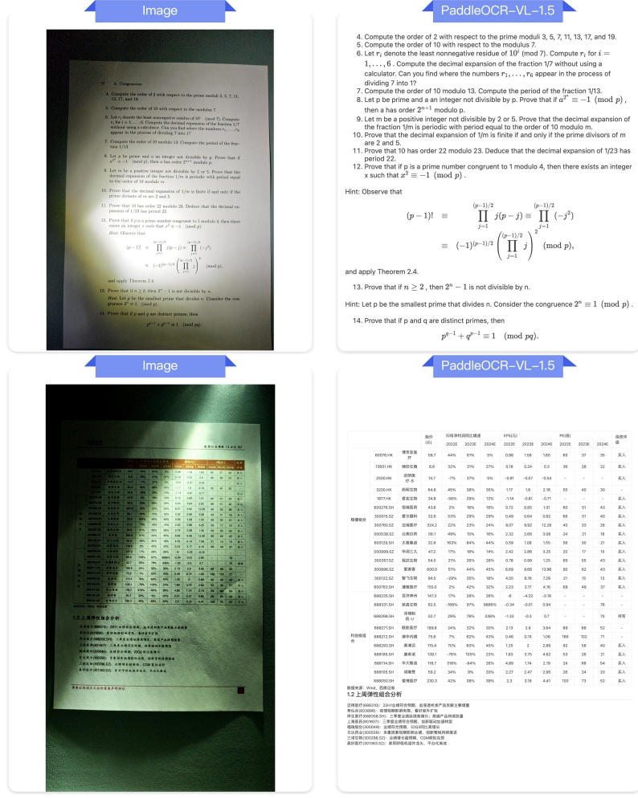
PaddleOCR-VL-1.5
Hình A1 | Đầu ra Markdown cho chiếu sáng.
Trang 27
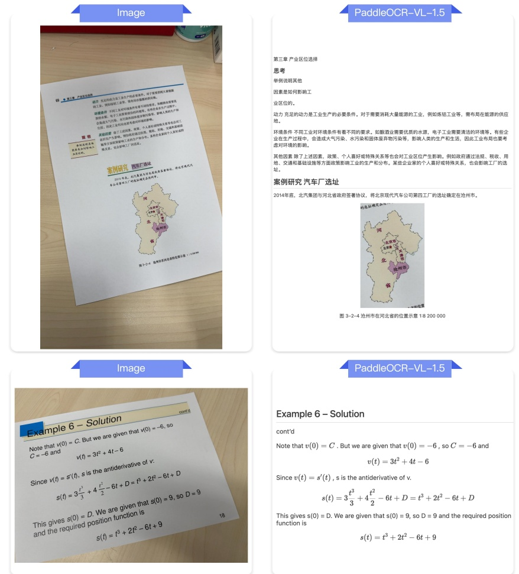
Hình A2 | Đầu ra Markdown cho Skew.
Trang 28
PaddleOCR-VL-1.5
Automation technologies can be broadly grouped into three categories:
1. Tự động hóa quy trình bằng robot (RPA): Đây là hình thức tự động hóa đơn giản nhất. Công nghệ RPA tự động hóa các quy trình lặp đi lặp lại dựa trên các quy tắc. Công nghệ này không thể học hỏi, thích ứng hoặc đưa ra quyết định; một bot RPA chỉ áp dụng một tập hợp các quy tắc nhất quán cho một quy trình để đạt được kết quả nhanh chóng và hiệu quả. Nhiều quy trình hành chính thủ công có thể được tối ưu hóa bằng cách này.
2. Học máy: Mức độ cao hơn là học máy, trong đó một máy tính có khả năng sử dụng lượng lớn dữ liệu để hiểu và dự đoán hành động mong muốn, và hiệu suất sẽ được cải thiện theo thời gian. Chatbot là một ví dụ điển hình về việc học máy được sử dụng trong lĩnh vực tài chính hiện nay. Các chatbot này sử dụng các công nghệ như xử lý ngôn ngữ tự nhiên (NLP) để giao tiếp theo thời gian thực với khách hàng, sử dụng dữ liệu từ các tương tác trước đó để hiểu rõ hơn về yêu cầu của khách hàng, và cung cấp thông tin hoặc phản hồi mong muốn.
3. Tăng cường nhận thức: Tăng cường nhận thức là cách tiếp cận gần nhất với trí tuệ nhân tạo thực sự mà chúng ta có hiện nay. Các máy tính nhận thức, như Watson của IBM, có khả năng xử lý dữ liệu phi cấu trúc và cung cấp câu trả lời cho các câu hỏi phức tạp, cho phép chúng thực hiện các nhiệm vụ mà trước đây chỉ có thể được thực hiện bởi con người.
Mặc dù các phân loại này thể hiện các mức độ phức tạp, nhưng tốt hơn là không nên coi các công nghệ tự động hóa như các giai đoạn mà một tổ chức phải trải qua. Thay vào đó, mỗi công nghệ phù hợp nhất với các loại công việc cụ thể và có thể được sử dụng kết hợp để đạt được các mục tiêu lớn hơn.
Tự động hóa thông minh (IA) là một thuật ngữ ngày càng được sử dụng để mô tả khái niệm kết hợp nhiều công nghệ tự động hóa để giải quyết các vấn đề kinh doanh phức tạp. Ví dụ, các tổ chức đang tìm cách sử dụng RPA (tự động hóa quy trình) kết hợp với học máy, xử lý ngôn ngữ tự nhiên và nhận dạng ký tự số để giúp giải quyết các thách thức về tuân thủ quy định và xử lý các yêu cầu bảo hiểm với số lượng lớn và độ phức tạp thấp.
Jobs changing, not necessarily replaced
Những dự đoán về tác động của tự động hóa đối với lực lượng lao động đã được đưa ra trong nhiều năm qua, với việc mất việc làm là một mối quan tâm lớn. Ví dụ, năm 2014, Peter Sondergaard, giám đốc nghiên cứu của Gartner, đã tuyên bố: "Gartner dự đoán rằng một trong ba công việc sẽ được chuyển đổi thành phần mềm, robot và máy móc thông minh vào năm 2025." Tuy nhiên, mặc dù có những khu vực tự động hóa rộng rãi trong ngành, nhưng các ước tính lạc quan cũng không thể đưa ra tỷ lệ tự động hóa trung bình cao hơn 5% – thấp hơn đáng kể so với tỷ lệ cần thiết để thay thế một phần ba lực lượng lao động trong 7 năm.
Mặc dù dự đoán ban đầu cho rằng tự động hóa sẽ dẫn đến việc thay thế hoàn toàn nhân viên, nhưng điều này không phải là những gì chúng ta đang thấy trong thời gian ngắn. Thay vào đó, các công nghệ này đang được sử dụng để nâng cao hoặc hỗ trợ công việc của nhân viên. Khả năng tự động hóa có thể giúp giảm bớt gánh nặng công việc hành chính lặp đi lặp lại hoặc cung cấp thông tin để giúp cá nhân đưa ra quyết định tốt hơn, cho phép nhân viên tập trung vào
Intelligent automation
(IA) là một thuật ngữ ngày càng được sử dụng để chỉ khái niệm kết hợp nhiều công nghệ tự động hóa nhằm giải quyết các vấn đề kinh doanh phức tạp.
Today's organizational challenges
PaddleOCR-VL-1.5
夺冠新课堂 三年级科学下·DX 期末测试卷
5. 一个开关只能控制一个小灯泡的亮和灭。
6. 菜
7. 清洗梨子时，它的大小发生了变化。（）
8. 在观察土壤的活动中，要戴上手套，完成活动之后，还要及时洗手。()
9. 把物体的质量称为“重量”，这是一种不规范的说法。
10. 物体所含物质的多少称为物体的体积。（）
一、填空题(每空1分,共23分)
三、选择题（将正确答案的序号填在括号里）（24分）
1. 体积相同，质量不同的两种液体，如果把轻的液体倒入重的液体中，它会___；如果把重的液体倒入轻的液体中，它会___（选填“沉”或“浮”）
1 下班选项中，属于天然材料的是（）
3. 电是一种___，太阳发出的___、物体发出的___等也都是能量的不同表现形式。
A. 绝缘体的绝缘性并不是绝对的
5. 小狗房子的选材要求：要___、___、___等。
6. 种子能萌发成能帮助植物吸收水分和
7. 植物茎内有许多“”，它们能够把根吸收的___和___输送到植物的叶等器官里。
C. 发现有人触电，应直接用手将触电者拉开
3. 下列植物中，会借助水来传播种子的是()
8. 人们根据土壤中所含沙粒和黏粒量的多少，把土壤分
为三类：含黏粒多的土壤叫含沙粒多的土壤叫沙粒和黏粒的含量差不多的土壤叫
4. 下列植物中，会借助动物来传播种子的是()
9. 固体有确定的形状, 我们可以用___、___、___等数值来描述它的大小。
5. 下列说法正确的是（）
10. 空气没有确定的___，但空气有___。
A. 所有绿色开花植物都有根、茎、叶、花、果实和种子六大器官
二、判断题(对的画“√”，错的画“×”)(10
B. 所有绿色开花植物都可以通过根、茎、叶等来繁殖后代
1. 种子和根是植物的重要器官。（）
C. 绿色开花植物不一定都用种子来繁殖后代
2. 要想知道小狗房子的大小是否合适，可以让小狗钻进去试试。（）
3. 变成油条的面团物质发生变化。（）
Hình A3 | Đầu ra Markdown cho chụp ảnh trên màn hình.
Trang 29
J.A. Schapfer et al. / Journal of Criminal Justice 38 (2018) 310–367
Notes
Refimmos
Image
PaddleOCR-VL-1.5

= 2 $ \sum_{1 \leq k \leq \sqrt{2}} \left[ \frac{x}{u} \right] - \left[ \sqrt{x} \right]^2 $
= 2 $ \sum_{1 \leq k \leq \sqrt{2}} \left[ \frac{x}{u} - \left[ \frac{x}{u} \right] \right] - \left( \sqrt{x} - \left[ \sqrt{x} \right]^2 \right)^2 $
= 2x $ \sum_{1 \leq k \leq \sqrt{2}} \frac{1}{u} - 2 \sum_{1 \leq k \leq \sqrt{2}} \left[ \frac{x}{u} - x + O(\sqrt{x}) \right] $
= 2x $ \left( \log \sqrt{x} + \gamma + O \left( \frac{1}{\sqrt{x}} \right) \right) - x + O(\sqrt{x}) $
= z $ \log x + (2y - 1)x + O(\sqrt{x}) $
This completes the proof.
Theorem 7.4 For x ≥ 1,
$ \Delta(x) = \sum_{n \leq x} \left( \log n - d(n) + 2\gamma \right) O \left( x^{1/2} \right) $.
Proof. By Theorem 7.3 we have
$ \sum_{n \leq x} d(n) = x \log x + (2\gamma - 1)x + O \left( x^{1/2} \right) $.
By Theorem 6.4 we have
$ \sum_{n \leq x} \log n = z \log x - z + O(\log z) $.
Subtracting the first equation from the second, we obtain
$ \sum_{n \leq x} \left( \log n - d(n) + 2\gamma \right) O \left( x^{1/2} \right) - 2\gamma(z) + O \left( \log z \right) = O \left( x^{1/2} \right) $.
An ordered factorization of the positive integer n into exactly £ factors is an £-tuple $ (d_1, \ldots, d_k) $ such that = d_1 = d_k. The division function $ d(n) $ counts the number of ordered factorizations of n into exactly two factors, since each factorization n = dd' is completely determined by the first factor. For every positive integer £, we define the arithmetic function $ d_n(n) $ as the number of factorizations of n into exactly £ factors. Then $ d_1(n) = 1 $ and $ d_2(n) = d(n) $ for all n.
Hình A4 | Đầu ra Markdown để quét.
Trang 30
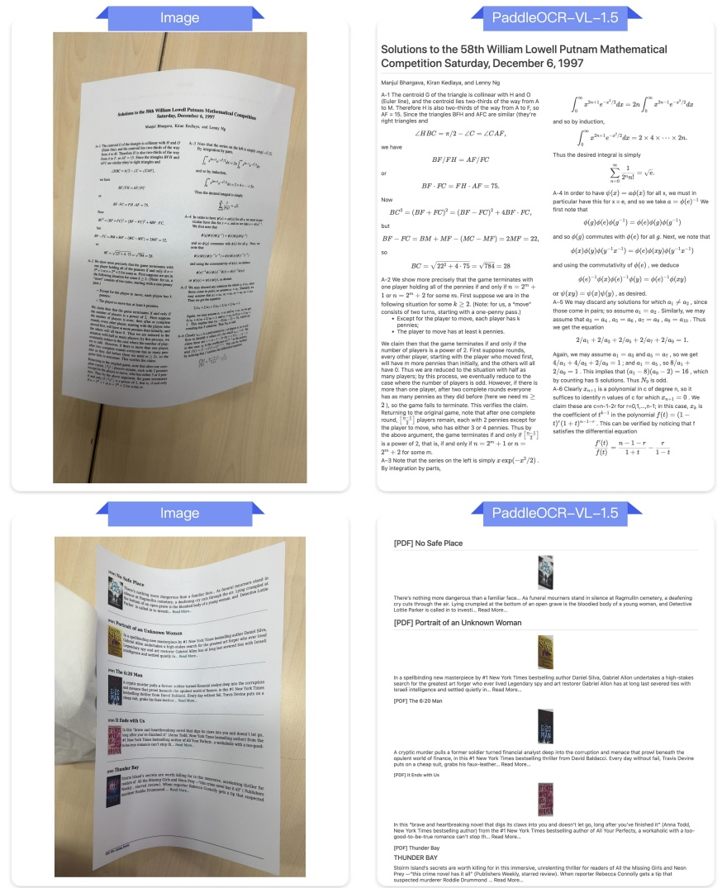
Hình A5 | Đầu ra Markdown cho phép điều chỉnh hình dạng.
Trang 31
E.2. Layout Analysis
E.2.1. Layout Analysis for Real-world Documents
Hình A6 | So sánh kết quả phân tích bố cục giữa PaddleOCR-VL và PaddleOCR-VL-1.5 cho phép điều chỉnh hình ảnh.
Trang 32
Hình A7 | So sánh kết quả phân tích bố cục giữa PaddleOCR-VL và PaddleOCR-VL-1.5 cho ảnh chụp màn hình.
Trang 33
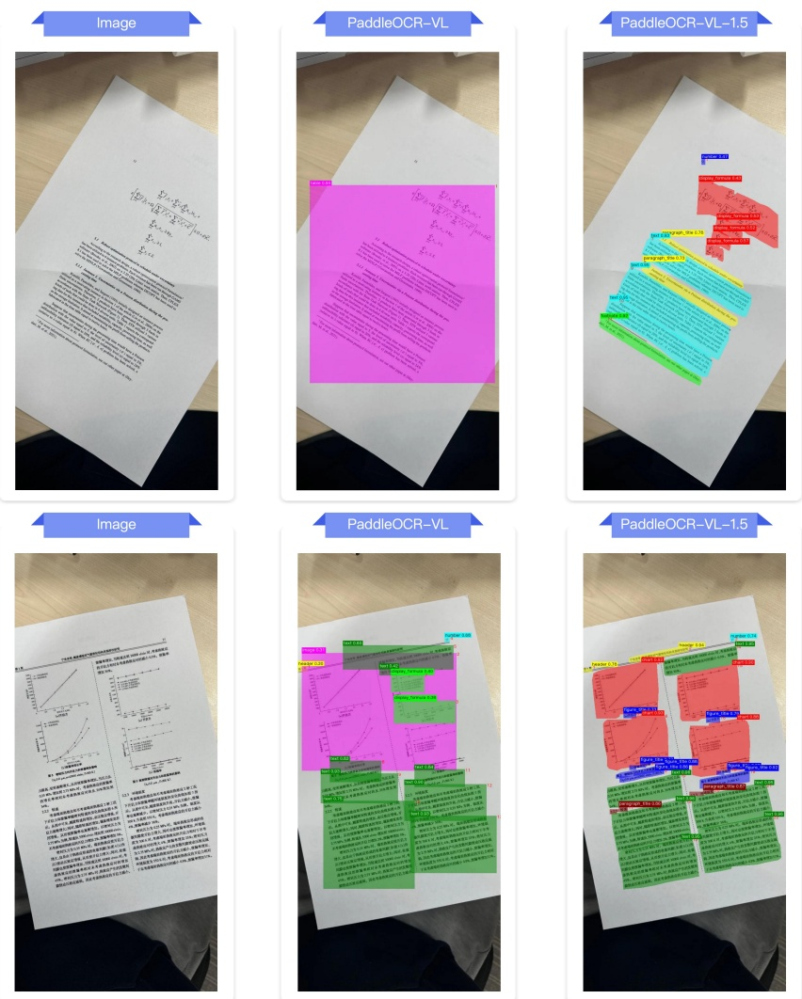
Hình A8 | So sánh kết quả phân tích bố cục giữa PaddleOCR-VL và PaddleOCR-VL-1.5 cho trường hợp dữ liệu bị lệch.
Trang 34
Hình A9 | So sánh kết quả phân tích bố cục giữa PaddleOCR-VL và PaddleOCR-VL-1.5 đối với điều kiện ánh sáng.
Trang 35
E.2.2. Layout Analysis for New Scenarios
Hình A10 | So sánh kết quả phân tích bố cục giữa PaddleOCR-VL và PaddleOCR-VL-1.5 cho các tình huống mới.
Trang 36
E.3. Text Recognition
E.3.1. Text Recognition for Text decoration
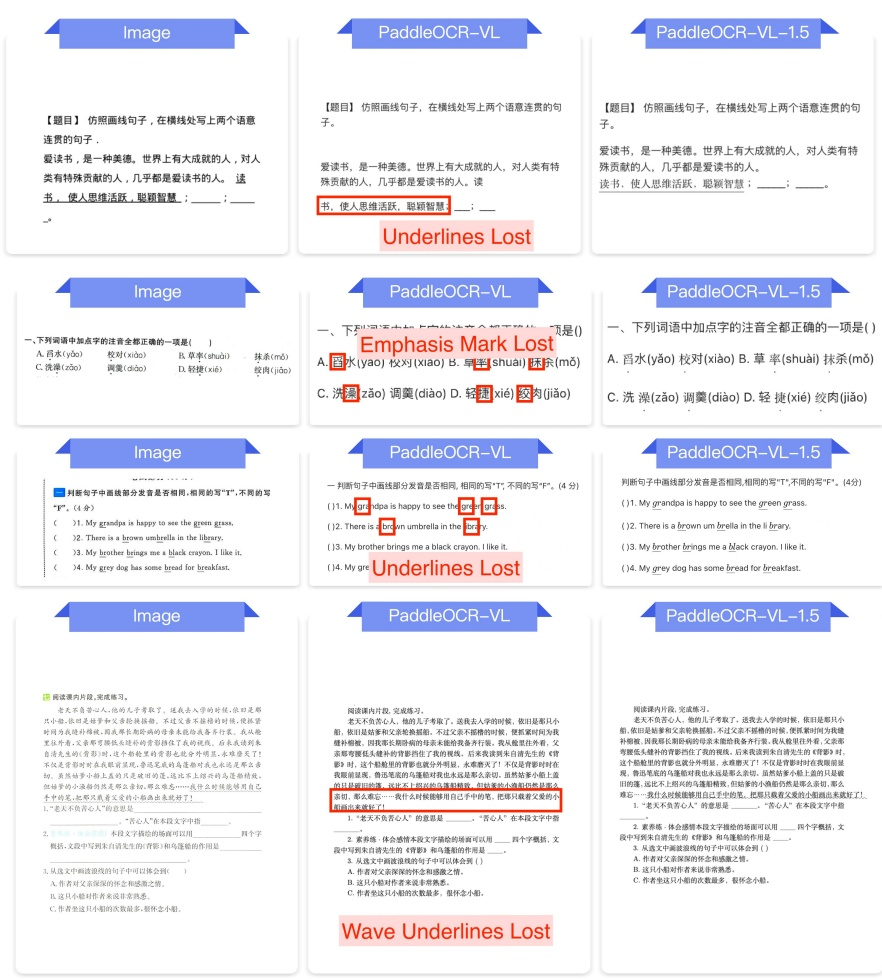
Hình A11 | So sánh kết quả đầu ra Markdown giữa PaddleOCR-VL và PaddleOCR-VL-1.5 trên tài liệu có chú thích.
Trang 37
E.3.2. Text Recognition for Special characters
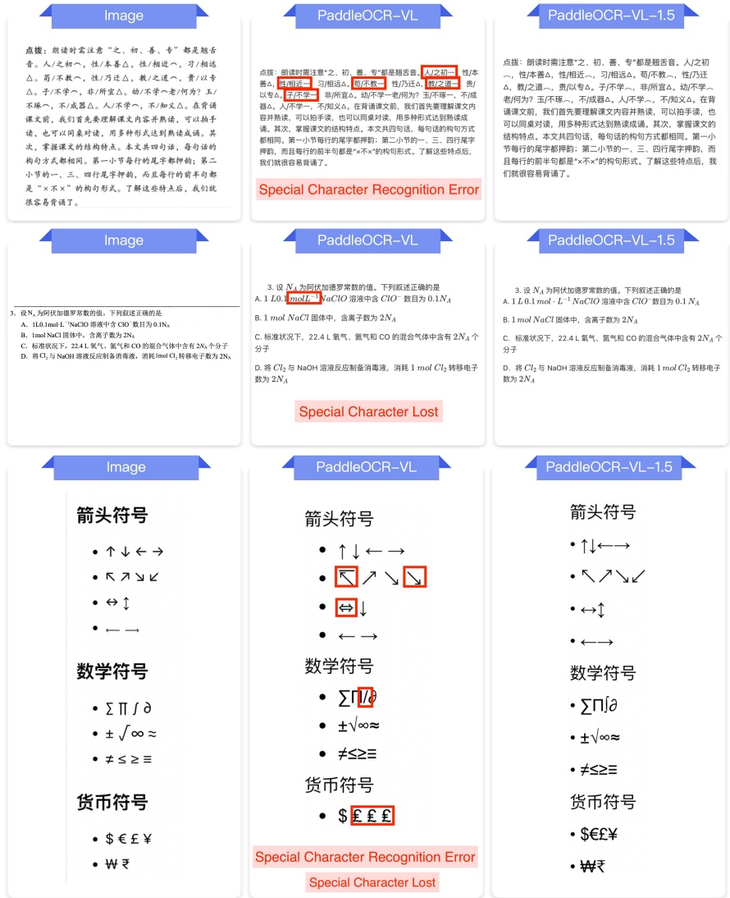
Hình A12 | So sánh kết quả đầu ra Markdown giữa PaddleOCR-VL và PaddleOCR-VL-1.5 trên các tài liệu chứa ký tự đặc biệt.
Trang 38
E.3.3. Text Recognition for Long-tail Scenarios
PaddleOCR-VL-1.5
Image
PaddleOCR-VL
在那个食不裹腹、艰苦卓决的年代，到处都是饥民。他一幅风尘扑扑、衣衫烂楼的样子，不径而来，声音宏亮得像破锣一样宣部：“我们必须破斧沉舟，饮鸠止渴也得干！绝不能让形形式式的敌人嘻笑怒骂、悬梁刺骨地看笑话，不然我们就死不冥目。”众人听了这翻话，一股作气，像疯了一样攻城掠地，每个人都事必恭亲、不敢怠慢。事成后，他迫不急待地搬师回朝，却开始莫名地沾沾自喜，整日里指手划脚，对日常琐事也粗枝大叶、心不在焉，完全没了当初的拼劲。最后，他鬼鬼祟祟地消失在人海，连个招呼都不打，空留一段委糜不振的过往，让人暇想连篇，唏嘘不已。
在那个食不腹膈、艰苦卓久的年代，到处都是饥民。他一幅风尘扑扑、衣衫褴褛的样子，不径而来，声音宏亮得像破锣一样宣部：“我们必须破斧沉舟，饮鸠止渴也得干！绝不能让形形式式的敌人嘈笑怒骂、悬梁刺骨地看笑话，不然我们就死不买耳。”众人听了这翻话，一股作气，像疯了一样攻城掠地，每个人都事必恭亲、不敢怠慢。事成后，他迫不急待地搬师回朝，却开始莫名地沾沾自喜，整日里指手划脚，对日常琐事也粗枝大叶、心不在焉，完全没了当初的拼劲。最后，他鬼鬼崇崇地消失在人海，连个招呼都不打，空留一段委糜不振的过往，让人暇想连篇，唏嘘不已。
在那个食不腹膈、艰苦卓久的年代，到处都是饥民。他一幅风尘扑扑、衣衫褴褛的样子，不径而来，声音宏亮得像破锣一样宣部：“我们必须破斧沉舟，饮鸠止渴也得干！绝不能让形形式式的敌人嘈笑怒骂、悬梁刺骨地看笑话，不然我们就死不买耳。”众人听了这翻话，一般人作气，像疯了一样攻城掠地，每个人都事必恭亲、不敢怠慢。事成后，他迫不急待地搬师回朝，却开始莫名地沾沾自喜，整日里指手划脚，对日常琐事也粗枝大叶、心不在焉，完全没了当初的拼劲。最后，他鬼鬼崇崇地消失在人海，连个招呼都不打，空留一段委糜不振的过往，让人暇想连篇，唏嘘不已。
Hình A13 | So sánh kết quả đầu ra Markdown giữa PaddleOCR-VL và PaddleOCR-VL-1.5 trên các tài liệu thuộc loại "dài".
Trang 39
E.4. Table Recognition
E.4.1. Table Recognition for General Tables
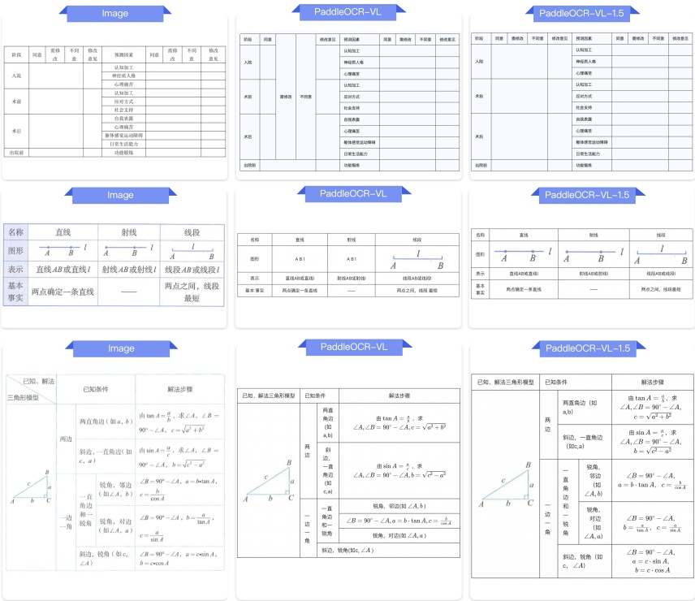
Hình A14 | So sánh kết quả đầu ra Markdown giữa PaddleOCR-VL và PaddleOCR-VL-1.5 trên các bảng tổng hợp.
Trang 40
E.4.2. Table Recognition for Multiple Languages
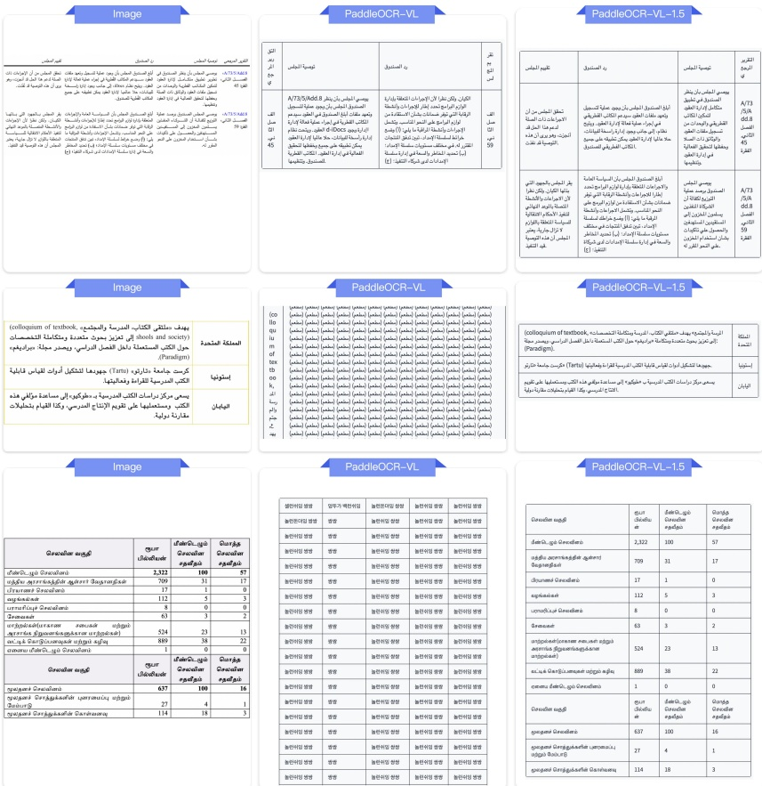
Hình A15 | So sánh kết quả đầu ra Markdown giữa PaddleOCR-VL và PaddleOCR-VL-1.5 trên các bảng đa ngôn ngữ.
Trang 41
E.4.3. Table Recognition for Cross-Page Tables
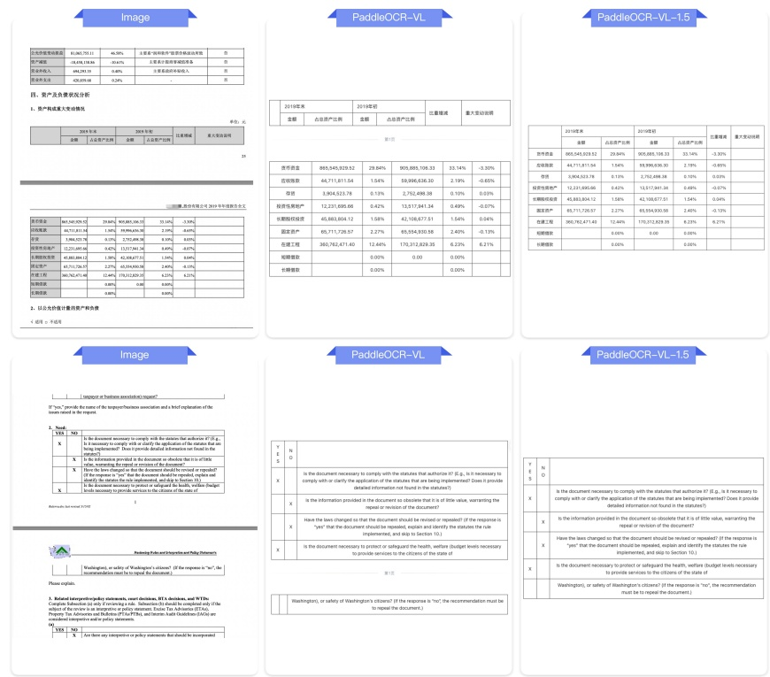
Hình A16 | So sánh kết quả đầu ra Markdown giữa PaddleOCR-VL và PaddleOCR-VL-1.5 trên các bảng liên kết trang.
Trang 42
E.5. Formula Recognition
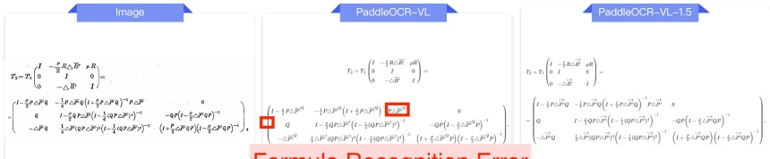
Formula Recognition Error
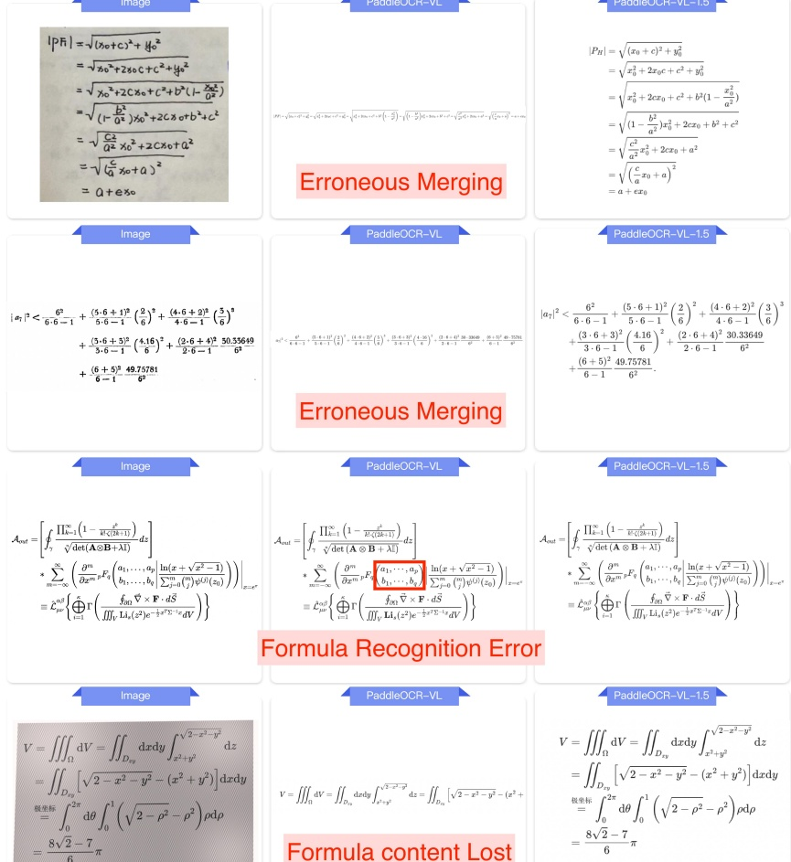
Image
PaddleOCR-VL-1.5
Formula Recognition Error
Image
PaddleOCR-VL-1.5
Hình A17 | So sánh kết quả đầu ra Markdown giữa PaddleOCR-VL và PaddleOCR-VL-1.5 trên các loại công thức khác nhau.
Trang 43
E.6. Seal Recognition
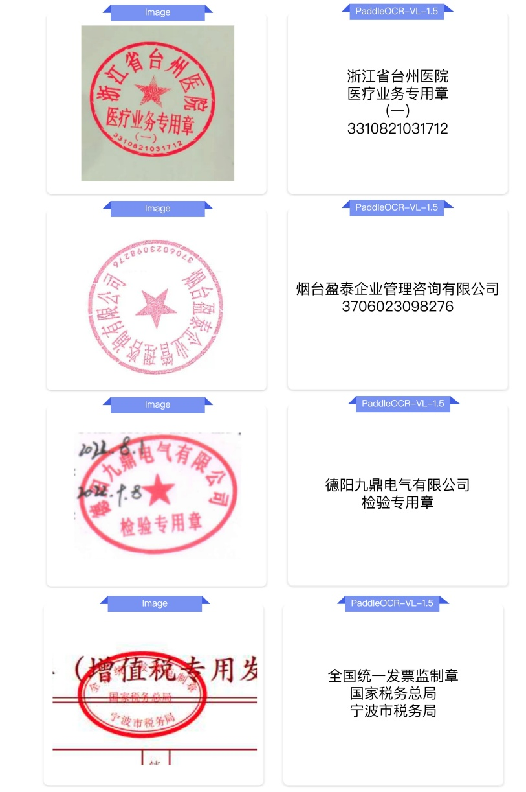
德阳九鼎电气有限公司
检验专用章
全国统一发票监制章
国家税务总局
宁波市税务局
Hình A18 | Đầu ra Markdown cho các loại Seal khác nhau 1.
Trang 44
Hình A19 | Đầu ra Markdown cho các loại Seal 2 khác nhau.
Trang 45
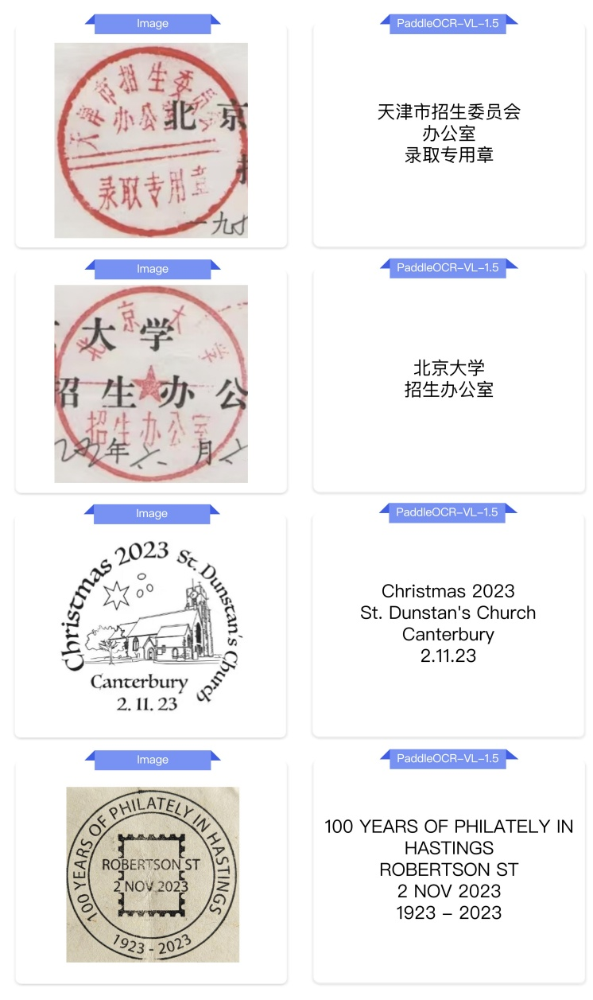
天津市招生委员会
办公室
录取专用章
100 NĂM LÀM THIỆC
TẠI HASTINGS
ROBERTSON ST
2/11/2023
1923 – 2023
Hình A20 | Đầu ra Markdown cho các loại Seal 3 khác nhau.
Trang 46
E.7. Text Spotting
Hình A21 | Kết quả nhận dạng văn bản trên các loại tài liệu khác nhau.